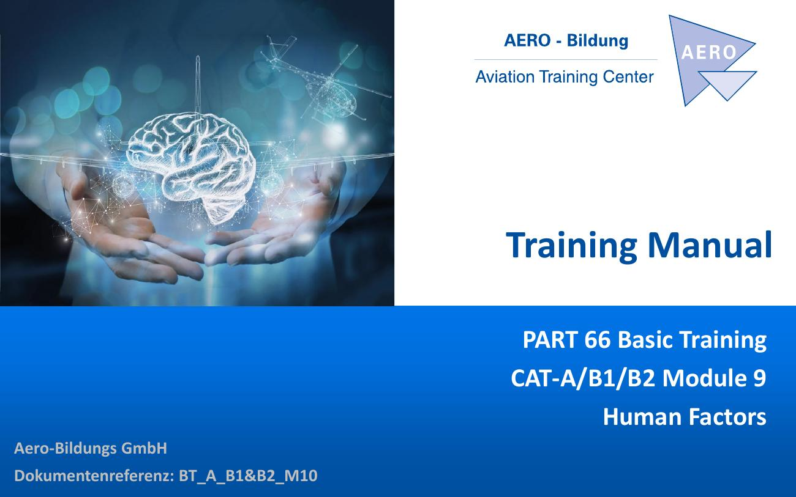
คู่มือฝึกอบรม (Training Manual)
PART 66 Basic Training
CAT-A/B1/B2 Module 9
Human Factors (ปัจจัยมนุษย์)
จัดทำโดย: Aero-Bildungs GmbH
Dokumentenreferenz: BT_A_B1&B2_M10
EASA Part-66 CAT-A/B1/B2 Basic Training — ฉบับแปลไทยสมบูรณ์ (หน้า 1–144) | Version 04/2025
รวมทุกหัวข้อ 9.0–9.10 พร้อมภาพประกอบครบทุกบท (ฉบับปรับปรุงล่าสุด)
PART 66 Basic Training
CAT-A/B1/B2 Module 9
Human Factors (ปัจจัยมนุษย์)
จัดทำโดย: Aero-Bildungs GmbH
Dokumentenreferenz: BT_A_B1&B2_M10
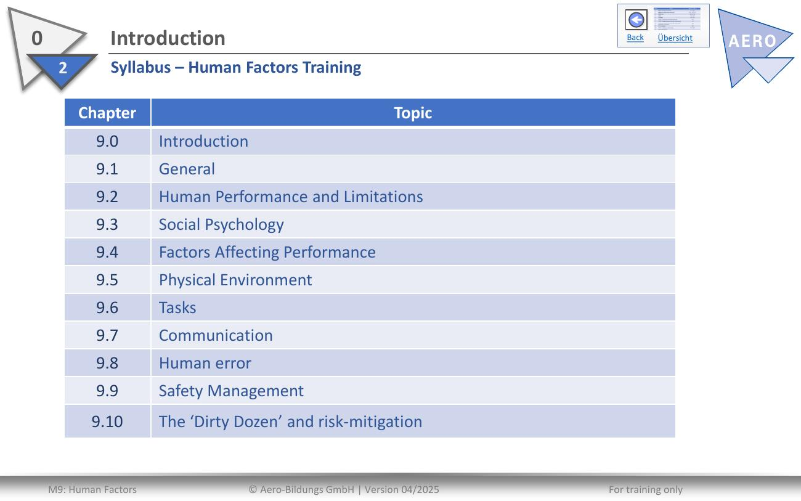
ตารางหลักสูตรการฝึกอบรมปัจจัยมนุษย์ (Human Factors Training) ฉบับปรับปรุงใหม่:
| บท | หัวข้อ |
|---|---|
| 9.0 | บทนำ (Introduction) |
| 9.1 | ทั่วไป (General) |
| 9.2 | สมรรถนะและข้อจำกัดของมนุษย์ (Human Performance and Limitations) |
| 9.3 | จิตวิทยาสังคม (Social Psychology) |
| 9.4 | ปัจจัยที่ส่งผลต่อสมรรถนะ (Factors Affecting Performance) |
| 9.5 | สภาพแวดล้อมทางกายภาพ (Physical Environment) |
| 9.6 | งาน (Tasks) |
| 9.7 | การสื่อสาร (Communication) |
| 9.8 | ความผิดพลาดของมนุษย์ (Human error) |
| 9.9 | การบริหารจัดการความปลอดภัย (Safety Management) |
| 9.10 | “Dirty Dozen” และวิธีลดความเสี่ยง (Risk-mitigation) |
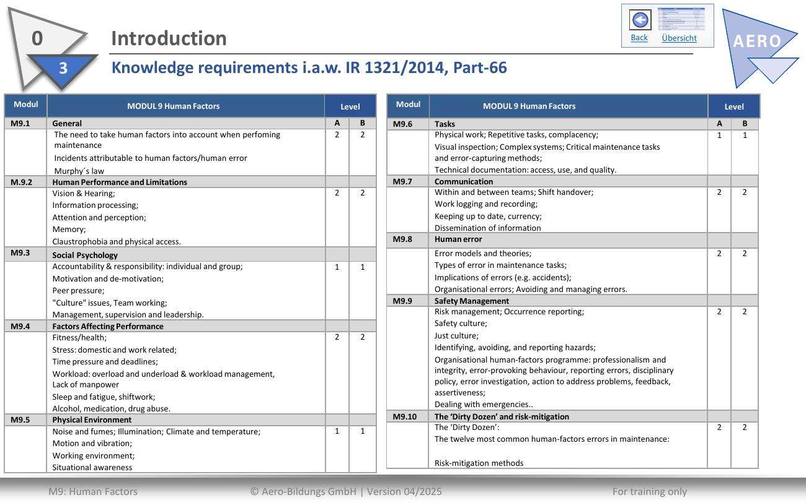
ตารางแสดงหัวข้อความรู้ที่จำเป็นในแต่ละบท พร้อมระดับความรู้ (Level) ที่กำหนดสำหรับ Category A และ B:
| บท | หัวข้อย่อยสำคัญ |
|---|---|
| 9.1 General | ความจำเป็นในการคำนึงถึงปัจจัยมนุษย์ในงานซ่อมบำรุง, อุบัติการณ์จากปัจจัยมนุษย์/ความผิดพลาดของมนุษย์, กฎของเมอร์ฟี |
| 9.2 Human Performance and Limitations | การมองเห็นและการได้ยิน, การประมวลผลข้อมูล, ความสนใจและการรับรู้, ความจำ, ภาวะกลัวที่แคบและการเข้าถึงทางกายภาพ |
| 9.3 Social Psychology | ความรับผิดชอบระดับบุคคล/กลุ่ม, แรงจูงใจและการขาดแรงจูงใจ, แรงกดดันจากเพื่อน, ประเด็นวัฒนธรรม, การทำงานเป็นทีม, การบริหารจัดการและภาวะผู้นำ |
| 9.4 Factors Affecting Performance | ความฟิต/สุขภาพ, ความเครียด, แรงกดดันด้านเวลา, ภาระงานมาก/น้อยเกินไปและการบริหารภาระงาน, การขาดกำลังคน, การนอนหลับและความล้า/การทำงานเป็นกะ, แอลกอฮอล์ ยา และสารเสพติด |
| 9.5 Physical Environment | เสียงดังและควัน, แสงสว่าง, สภาพอากาศและอุณหภูมิ, การเคลื่อนไหวและแรงสั่นสะเทือน, สภาพแวดล้อมการทำงาน, การตระหนักรู้สถานการณ์ (Situational awareness) |
| บท | หัวข้อย่อยสำคัญ |
|---|---|
| 9.6 Tasks | งานที่ใช้แรงกาย, งานประจำและความประมาทเลินเล่อ (complacency), การตรวจสอบด้วยสายตา, ระบบที่ซับซ้อน, งานซ่อมบำรุงที่สำคัญและวิธีตรวจจับข้อผิดพลาด, เอกสารทางเทคนิค: การเข้าถึง การใช้งาน และคุณภาพ |
| 9.7 Communication | การสื่อสารภายในและระหว่างทีม, การส่งมอบงานระหว่างกะ, การบันทึกและจดบันทึกงาน, การรักษาความทันสมัยของความรู้, การเผยแพร่ข้อมูล |
| 9.8 Human error | แบบจำลองและทฤษฎีข้อผิดพลาด, ประเภทข้อผิดพลาดในงานซ่อมบำรุง, ผลกระทบของข้อผิดพลาด (เช่น อุบัติเหตุ), ข้อผิดพลาดระดับองค์กร, การหลีกเลี่ยงและจัดการข้อผิดพลาด |
| 9.9 Safety Management | การบริหารความเสี่ยง, การรายงานเหตุการณ์ (Occurrence reporting), วัฒนธรรมความปลอดภัย (Safety culture), วัฒนธรรมเป็นธรรม (Just culture), การระบุ/หลีกเลี่ยง/รายงานอันตราย, โปรแกรมปัจจัยมนุษย์ระดับองค์กร (ความเป็นมืออาชีพและความซื่อสัตย์, พฤติกรรมก่อข้อผิดพลาด, การรายงานข้อผิดพลาด, นโยบายวินัย, การสอบสวนข้อผิดพลาด, มาตรการแก้ไข, ผลป้อนกลับ, ความกล้าแสดงออก), การรับมือสถานการณ์ฉุกเฉิน |
| 9.10 The 'Dirty Dozen' and risk-mitigation | Dirty Dozen: 12 ข้อผิดพลาดด้านปัจจัยมนุษย์ที่พบบ่อยที่สุดในงานซ่อมบำรุง, วิธีลดความเสี่ยง (Risk-mitigation methods) |
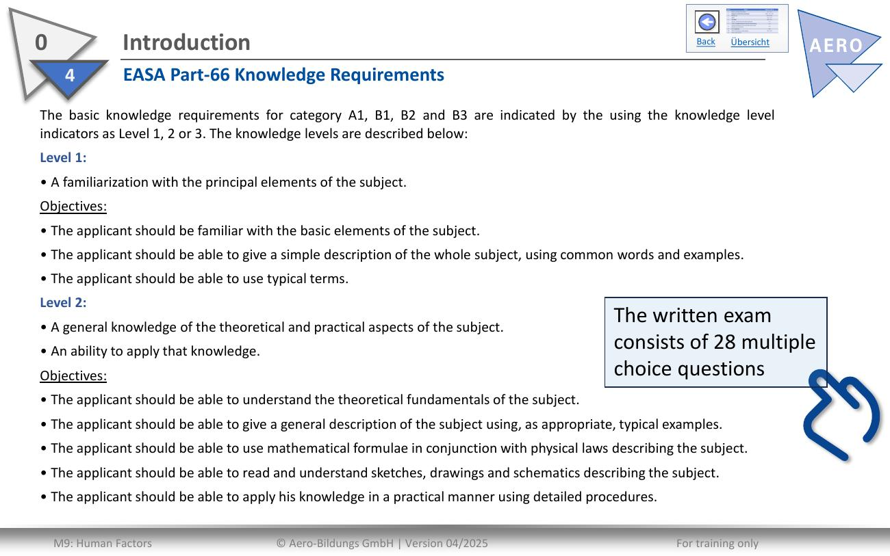
ข้อกำหนดความรู้พื้นฐานสำหรับ Category A1, B1, B2 และ B3 ถูกระบุด้วยตัวบ่งชี้ระดับความรู้ (Knowledge Level Indicators) เป็น Level 1, 2 หรือ 3 ดังนี้:
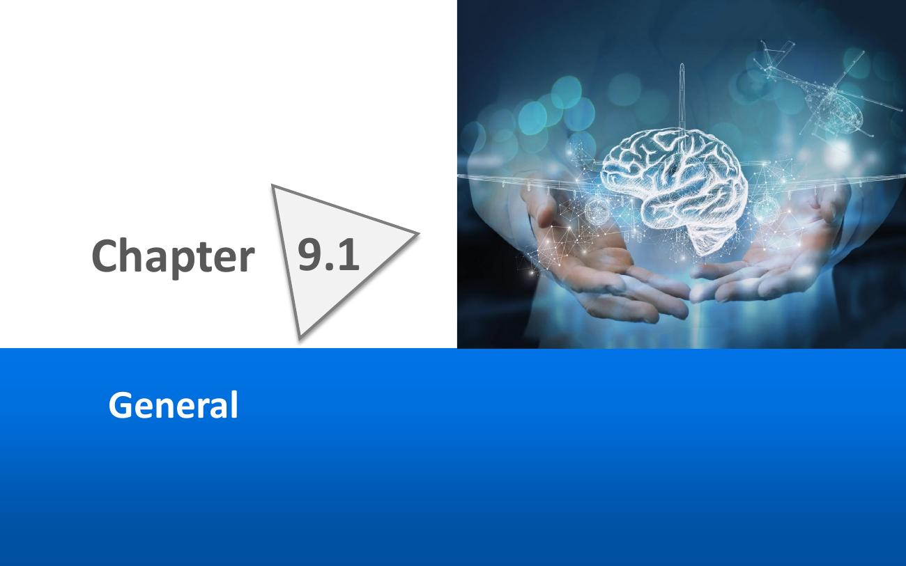
หน้าแบ่งบทเริ่มต้นหัวข้อ 9.1
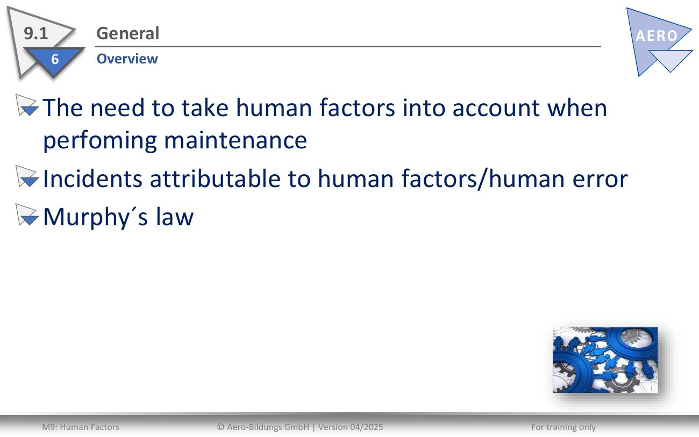
หัวข้อในบทนี้:
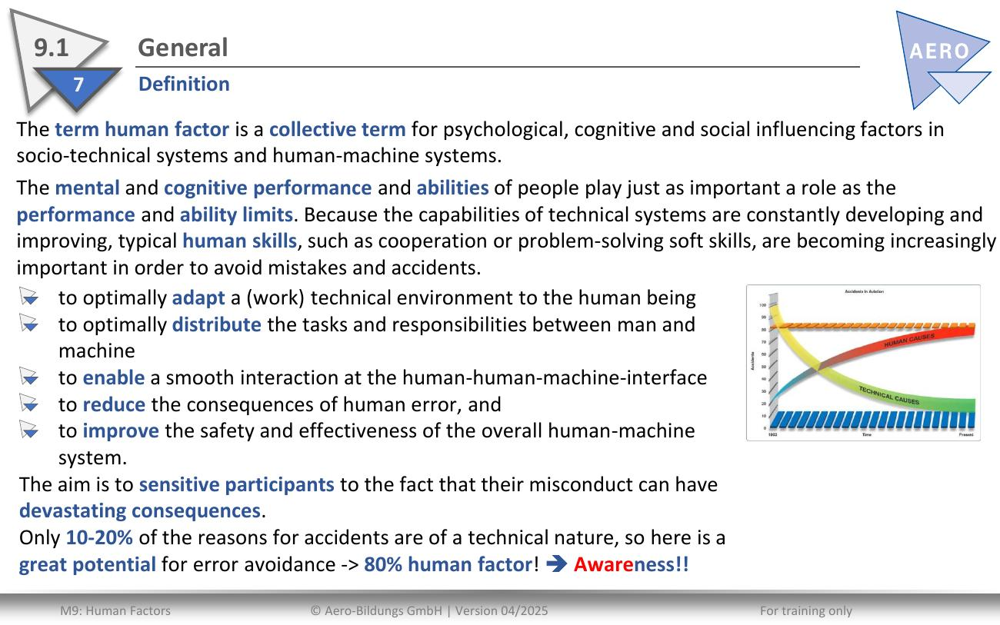
คำว่า “Human Factor” เป็นคำรวมที่หมายถึงปัจจัยด้านจิตวิทยา ความคิด (cognitive) และสังคม ที่มีอิทธิพลต่อระบบสังคม-เทคนิค (socio-technical systems) และระบบมนุษย์-เครื่องจักร (human-machine systems)
สมรรถนะและความสามารถทางจิตใจและความคิดของมนุษย์มีความสำคัญไม่น้อยไปกว่าขีดจำกัดด้านสมรรถนะและความสามารถ เนื่องจากความสามารถของระบบเทคนิคพัฒนาและปรับปรุงอยู่ตลอดเวลา ทักษะของมนุษย์ทั่วไป เช่น การทำงานร่วมกันหรือทักษะการแก้ปัญหา (soft skills) จึงมีความสำคัญมากขึ้นเรื่อยๆ เพื่อหลีกเลี่ยงความผิดพลาดและอุบัติเหตุ
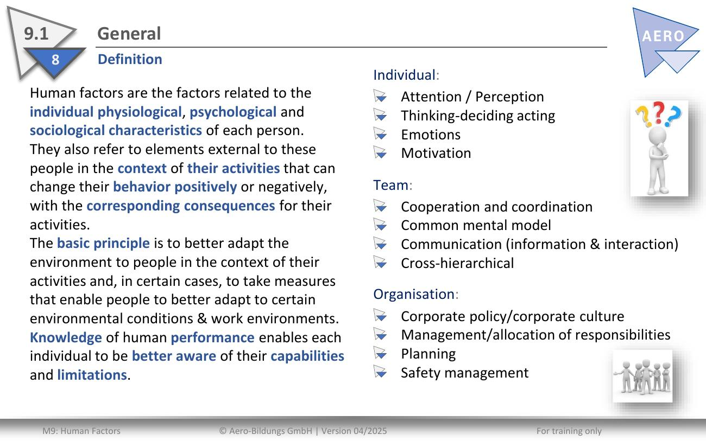
ปัจจัยมนุษย์คือปัจจัยที่เกี่ยวข้องกับลักษณะเฉพาะทางสรีระ จิตวิทยา และสังคมของแต่ละบุคคล รวมถึงองค์ประกอบภายนอกตัวบุคคลในบริบทของกิจกรรมที่อาจเปลี่ยนพฤติกรรมไปในทางบวกหรือลบ ซึ่งส่งผลตามมาต่อกิจกรรมนั้นๆ
หลักการพื้นฐานคือการปรับสภาพแวดล้อมให้เหมาะกับมนุษย์ในบริบทกิจกรรมของตน และในบางกรณีอาจต้องดำเนินมาตรการที่ช่วยให้มนุษย์ปรับตัวเข้ากับสภาพแวดล้อมและสถานที่ทำงานบางอย่างได้ดีขึ้น ความรู้เกี่ยวกับสมรรถนะของมนุษย์ช่วยให้แต่ละบุคคลตระหนักถึงความสามารถและข้อจำกัดของตนเองได้ดีขึ้น
| ระดับ | องค์ประกอบ |
|---|---|
| บุคคล (Individual) | ความสนใจ/การรับรู้, คิด-ตัดสินใจ-กระทำ, อารมณ์, แรงจูงใจ |
| ทีม (Team) | ความร่วมมือและการประสานงาน, แบบจำลองความคิดร่วมกัน, การสื่อสาร (ข้อมูลและปฏิสัมพันธ์), การข้ามลำดับชั้นบังคับบัญชา |
| องค์กร (Organisation) | นโยบาย/วัฒนธรรมองค์กร, การบริหารจัดการ/การกระจายความรับผิดชอบ, การวางแผน, การบริหารจัดการความปลอดภัย (Safety Management) |
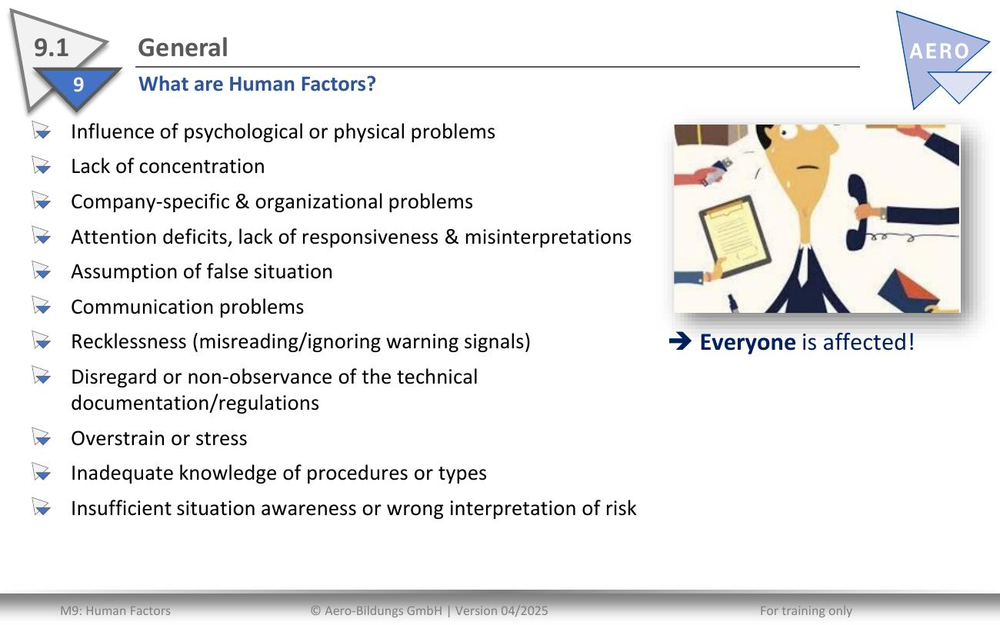
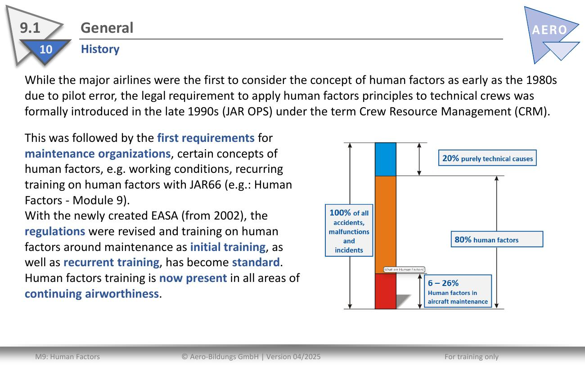
แม้สายการบินใหญ่จะเริ่มพิจารณาแนวคิดปัจจัยมนุษย์ตั้งแต่ช่วงทศวรรษ 1980 เนื่องจากความผิดพลาดของนักบิน แต่ข้อกำหนดทางกฎหมายที่บังคับใช้หลักการปัจจัยมนุษย์กับทีมช่างเทคนิคเพิ่งถูกนำมาใช้อย่างเป็นทางการช่วงปลายทศวรรษ 1990 (JAR OPS) ภายใต้ชื่อ Crew Resource Management (CRM)
ต่อมาจึงเกิดข้อกำหนดแรกสำหรับองค์กรซ่อมบำรุง แนวคิดปัจจัยมนุษย์บางประการ เช่น สภาพการทำงาน การฝึกอบรมทบทวนด้านปัจจัยมนุษย์ ภายใต้ JAR66 (เช่น Human Factors – Module 9)
เมื่อ EASA ก่อตั้งขึ้นใหม่ (ตั้งแต่ปี 2002) กฎระเบียบได้รับการปรับปรุง และการฝึกอบรมด้านปัจจัยมนุษย์เกี่ยวกับงานซ่อมบำรุงทั้งในรูปแบบการฝึกอบรมเบื้องต้นและการฝึกอบรมทบทวนกลายเป็นมาตรฐาน การฝึกอบรมปัจจัยมนุษย์ปัจจุบันมีอยู่ในทุกส่วนของงานด้านความสมควรเดินอากาศต่อเนื่อง (Continuing Airworthiness)
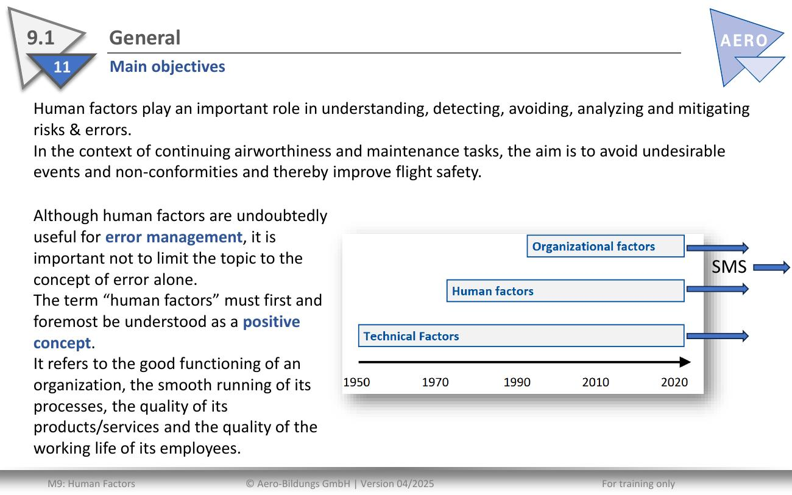
ปัจจัยมนุษย์มีบทบาทสำคัญในการทำความเข้าใจ ตรวจจับ หลีกเลี่ยง วิเคราะห์ และบรรเทาความเสี่ยงและข้อผิดพลาด ในบริบทของความสมควรเดินอากาศต่อเนื่องและงานซ่อมบำรุง เป้าหมายคือการหลีกเลี่ยงเหตุการณ์ไม่พึงประสงค์และความไม่สอดคล้อง เพื่อพัฒนาความปลอดภัยการบิน
คำว่า “ปัจจัยมนุษย์” ต้องถูกเข้าใจในเบื้องต้นว่าเป็นแนวคิดเชิงบวก หมายถึงการทำงานที่ดีขององค์กร ความราบรื่นของกระบวนการ คุณภาพของผลิตภัณฑ์/บริการ และคุณภาพชีวิตการทำงานของพนักงาน
เชื่อมโยงกับ SMS (Safety Management System)
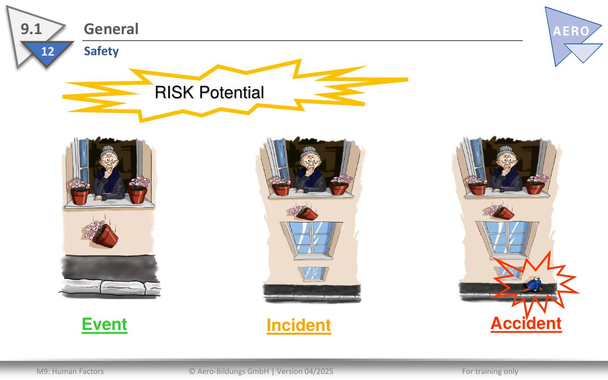
ลำดับการพัฒนาของปัญหาด้านความปลอดภัย:
ศักยภาพความเสี่ยง (RISK Potential) → เหตุการณ์ (Event) → อุบัติการณ์ (Incident) → อุบัติเหตุ (Accident)
ความเสี่ยงที่แฝงอยู่หากไม่ได้รับการจัดการ สามารถลุกลามผ่านเหตุการณ์และอุบัติการณ์ จนกลายเป็นอุบัติเหตุร้ายแรงได้ในที่สุด
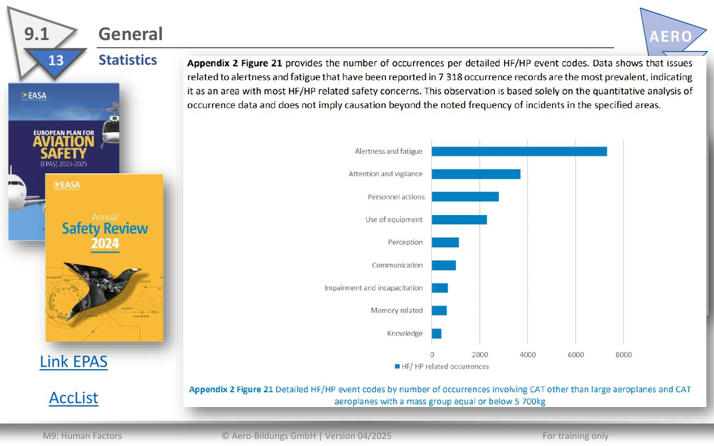
หน้านี้อ้างอิงข้อมูลสถิติจาก EASA EPAS (European Plan for Aviation Safety) และรายการอุบัติเหตุ/อุบัติการณ์ (Accident List) เพื่อแสดงแนวโน้มสาเหตุของอุบัติเหตุทางการบิน — ดูภาพต้นฉบับประกอบสำหรับกราฟและตัวเลขโดยละเอียด
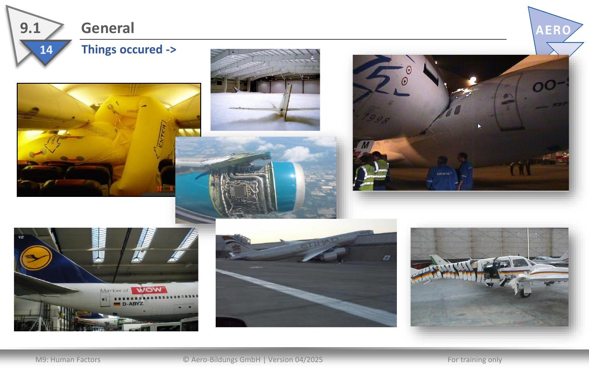
ตัวอย่างภาพเหตุการณ์/อุบัติการณ์จริงที่เคยเกิดขึ้นในงานซ่อมบำรุงอากาศยาน เพื่อกระตุ้นให้ผู้เรียนตระหนักว่าความผิดพลาดเล็กน้อยสามารถนำไปสู่ผลลัพธ์ที่ไม่คาดคิดได้ — ดูภาพต้นฉบับประกอบ
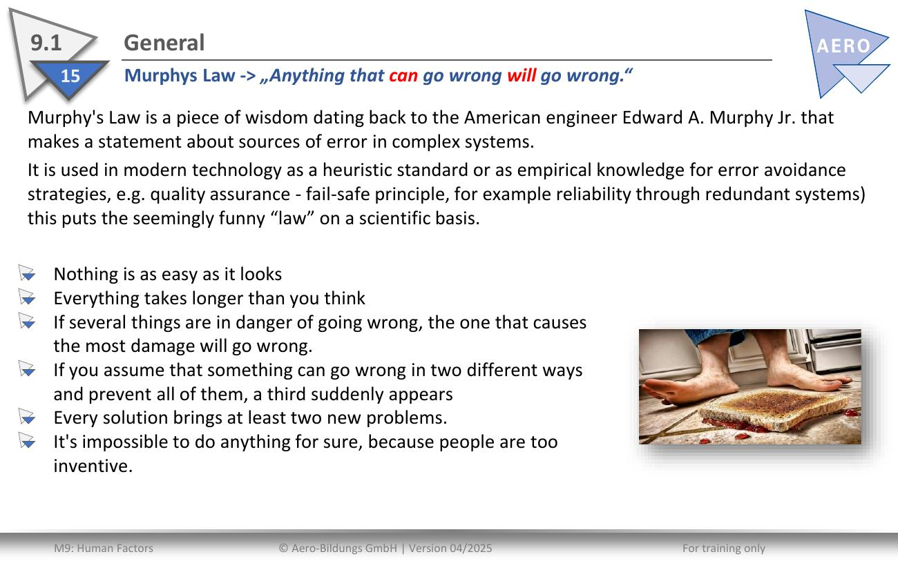
→ สิ่งใดก็ตามที่มีโอกาสผิดพลาดได้ ย่อมจะผิดพลาดในที่สุด
"Anything that can go wrong will go wrong."
กฎของเมอร์ฟีเป็นภูมิปัญญาที่มีที่มาจากวิศวกรชาวอเมริกัน Edward A. Murphy Jr. ซึ่งกล่าวถึงแหล่งที่มาของข้อผิดพลาดในระบบที่ซับซ้อน ถูกนำมาใช้ในเทคโนโลยีสมัยใหม่ในฐานะมาตรฐานเชิงประจักษ์หรือความรู้เชิงประสบการณ์สำหรับกลยุทธ์ป้องกันข้อผิดพลาด เช่น การประกันคุณภาพ หลักการ fail-safe เช่น ความน่าเชื่อถือผ่านระบบสำรอง (redundant systems) ซึ่งทำให้ “กฎ” ที่ดูเหมือนขบขันนี้มีพื้นฐานทางวิทยาศาสตร์รองรับ
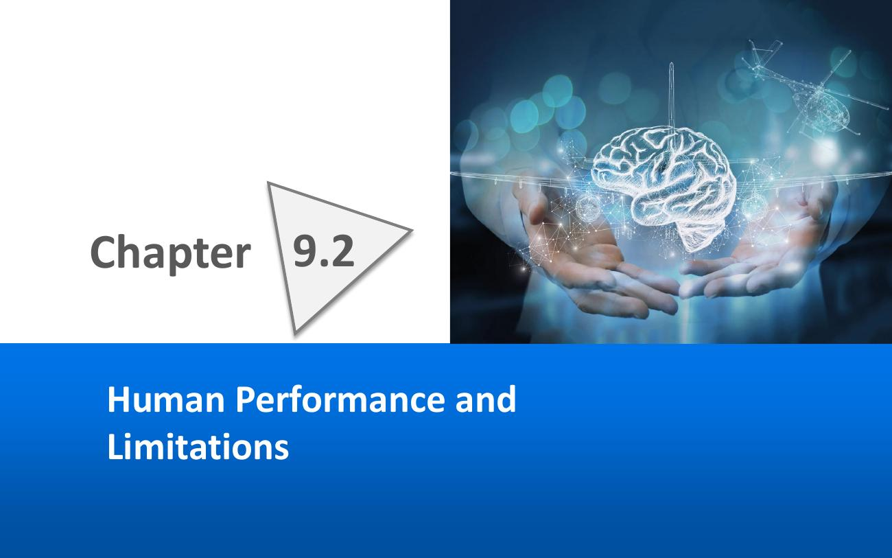
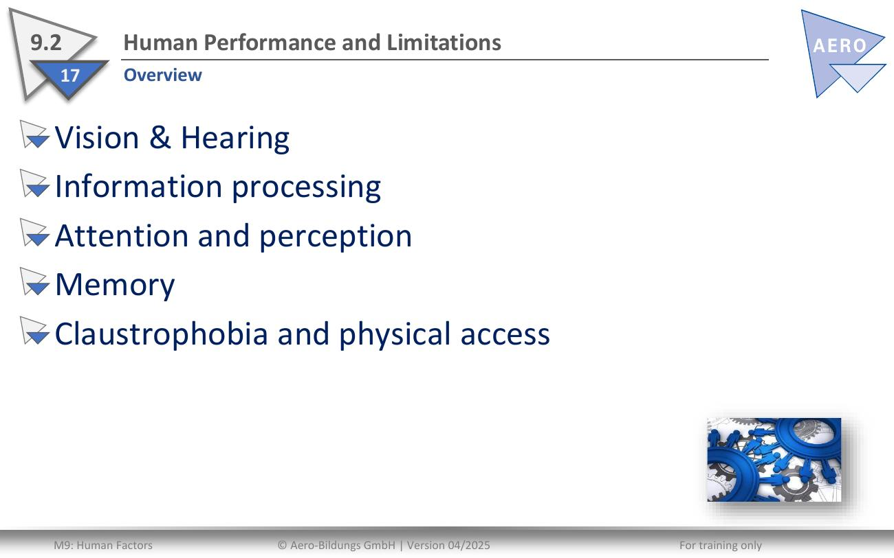
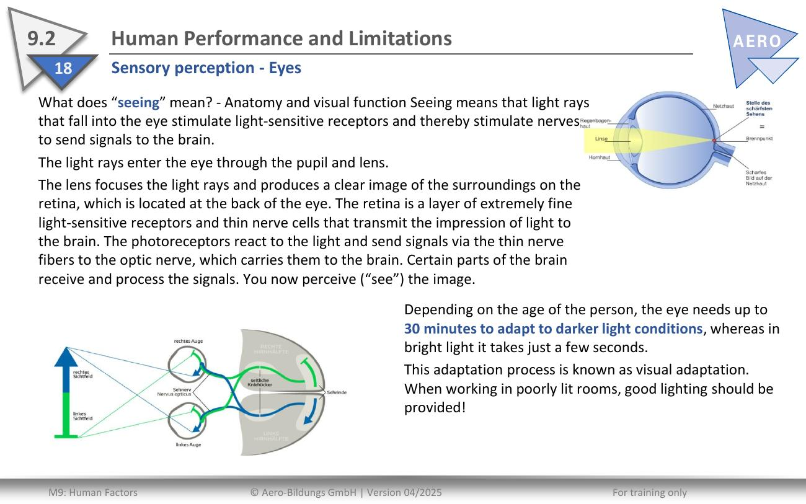
“การมองเห็น” คืออะไร? — กายวิภาคและการทำงานของการมองเห็น: การมองเห็นคือการที่แสงตกกระทบดวงตา กระตุ้นตัวรับแสงที่ไวต่อแสงและกระตุ้นเส้นประสาทให้ส่งสัญญาณไปยังสมอง
แสงเข้าสู่ดวงตาผ่านรูม่านตาและเลนส์ เลนส์รวมลำแสงและสร้างภาพที่ชัดเจนของสิ่งแวดล้อมบนจอตา (retina) ซึ่งอยู่ที่ผนังด้านหลังของลูกตา จอตาเป็นชั้นของตัวรับแสงที่ละเอียดอ่อนมากและเซลล์ประสาทบางๆ ที่ส่งความรู้สึกของแสงไปยังสมอง ตัวรับแสงตอบสนองต่อแสงและส่งสัญญาณผ่านเส้นใยประสาทบางๆ ไปยังเส้นประสาทตา ซึ่งนำสัญญาณไปยังสมอง สมองบางส่วนรับและประมวลผลสัญญาณเหล่านี้ ทำให้เรารับรู้ (“เห็น”) ภาพนั้น
ขึ้นอยู่กับอายุของแต่ละบุคคล ดวงตาต้องใช้เวลาถึง 30 นาที เพื่อปรับตัวกับสภาพแสงที่มืดกว่า ในขณะที่การปรับตัวในที่สว่างใช้เวลาเพียงไม่กี่วินาที กระบวนการนี้เรียกว่า Visual Adaptation
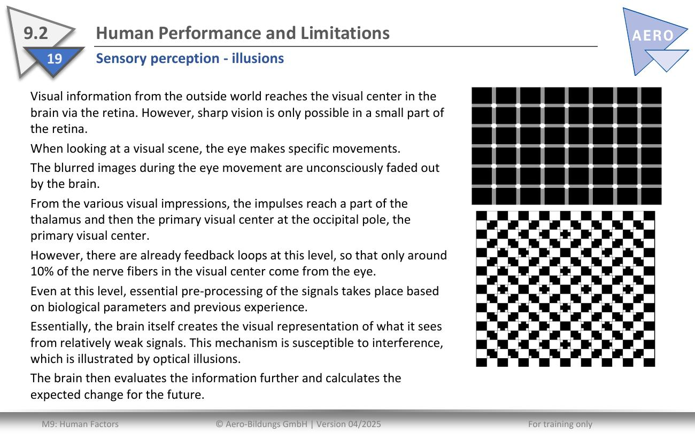
ข้อมูลภาพจากโลกภายนอกไปถึงศูนย์การมองเห็นในสมองผ่านจอตา อย่างไรก็ตาม การมองเห็นที่คมชัดเกิดขึ้นได้เฉพาะในส่วนเล็กๆ ของจอตาเท่านั้น เมื่อมองภาพหนึ่ง ดวงตาจะเคลื่อนไหวเฉพาะจุด ภาพเบลอระหว่างการเคลื่อนไหวของตาจะถูกสมองกรองออกโดยไม่รู้ตัว
จากความประทับใจทางสายตาต่างๆ สัญญาณจะไปถึงส่วนหนึ่งของทาลามัส แล้วไปยังศูนย์การมองเห็นหลักที่ท้ายทอย (occipital pole) แม้กระทั่งในระดับนี้ก็ยังมี feedback loop ทำให้มีเพียง ~10% ของเส้นใยประสาทในศูนย์การมองเห็นที่มาจากตาโดยตรง ส่วนที่เหลือเป็นการประมวลผลล่วงหน้าที่สำคัญโดยอาศัยพารามิเตอร์ทางชีวภาพและประสบการณ์ที่ผ่านมา
กล่าวโดยสรุป สมองสร้างภาพที่เห็นขึ้นเองจากสัญญาณที่ค่อนข้างอ่อน กลไกนี้จึงเสี่ยงต่อการถูกรบกวน ซึ่งแสดงให้เห็นผ่านภาพลวงตา (optical illusions) จากนั้นสมองจะประมวลผลข้อมูลต่อไปและคำนวณการเปลี่ยนแปลงที่คาดว่าจะเกิดขึ้นในอนาคต
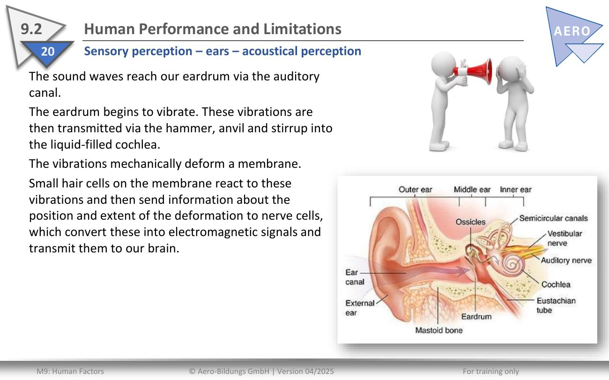
คลื่นเสียงเดินทางผ่านช่องหูมาถึงแก้วหูของเรา แก้วหูเริ่มสั่นสะเทือน การสั่นสะเทือนนี้ถูกส่งต่อผ่านกระดูกค้อน ทั่ง และโกลน เข้าสู่คอเคลียที่มีของเหลวบรรจุอยู่
การสั่นสะเทือนทำให้เยื่อบางชนิดเปลี่ยนรูปทางกล เซลล์ขนเล็กๆ บนเยื่อจะตอบสนองต่อการสั่นสะเทือนเหล่านี้ แล้วส่งข้อมูลตำแหน่งและระดับการเปลี่ยนรูปไปยังเซลล์ประสาท ซึ่งแปลงเป็นสัญญาณแม่เหล็กไฟฟ้าและส่งต่อไปยังสมองของเรา
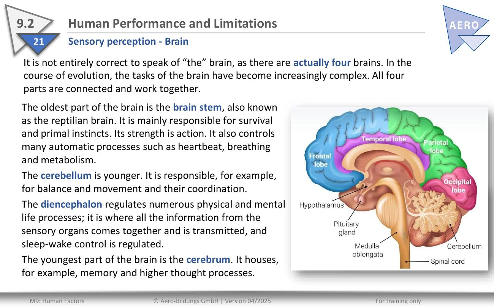
จริงๆ แล้วการพูดถึง “สมอง” เพียงส่วนเดียวไม่ถูกต้องนัก เพราะแท้จริงมี 4 ส่วนของสมอง ที่พัฒนาซับซ้อนขึ้นตามวิวัฒนาการ ทั้ง 4 ส่วนเชื่อมโยงและทำงานร่วมกัน:
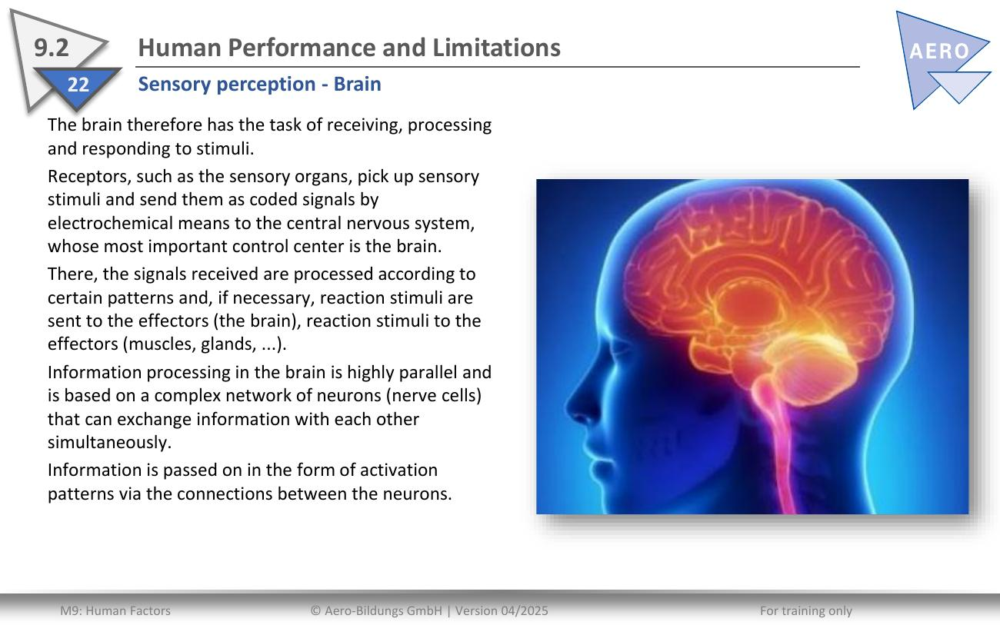
สมองมีหน้าที่รับ ประมวลผล และตอบสนองต่อสิ่งเร้า ตัวรับความรู้สึก (Receptors) เช่น อวัยวะรับสัมผัส จะรับสิ่งเร้าและส่งเป็นสัญญาณเข้ารหัสทางเคมีไฟฟ้าไปยังระบบประสาทส่วนกลาง ซึ่งมีสมองเป็นศูนย์ควบคุมหลัก
สัญญาณที่ได้รับจะถูกประมวลผลตามรูปแบบบางอย่าง และหากจำเป็นจะส่งสัญญาณตอบสนองไปยัง effector (กล้ามเนื้อ ต่อม ฯลฯ) การประมวลผลข้อมูลในสมองเป็นแบบขนานสูง อาศัยเครือข่ายเซลล์ประสาทที่ซับซ้อนซึ่งสามารถแลกเปลี่ยนข้อมูลกันได้พร้อมกัน ข้อมูลถูกส่งต่อในรูปแบบของรูปแบบการกระตุ้น (activation patterns) ผ่านการเชื่อมต่อระหว่างเซลล์ประสาท
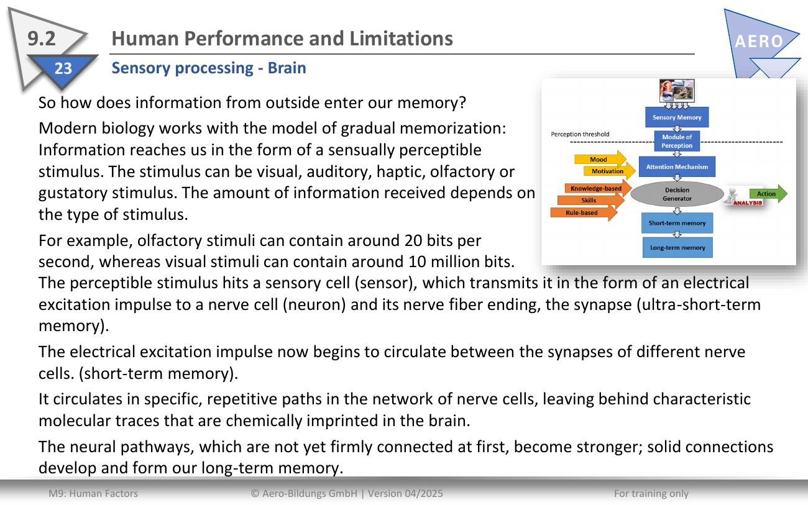
ชีววิทยาสมัยใหม่ใช้แบบจำลอง “การเก็บความจำเป็นขั้นตอน (gradual memorization)”: ข้อมูลมาถึงเราในรูปแบบสิ่งเร้าที่รับรู้ได้ทางประสาทสัมผัส อาจเป็นสิ่งเร้าทางสายตา การได้ยิน การสัมผัส กลิ่น หรือรส ปริมาณข้อมูลที่รับได้ขึ้นกับชนิดของสิ่งเร้า เช่น กลิ่นรับได้ประมาณ 20 บิต/วินาที ขณะที่ภาพรับได้ถึงประมาณ 10 ล้านบิต
สิ่งเร้าที่รับรู้ได้จะกระทบเซลล์รับความรู้สึก (sensor) ซึ่งส่งต่อเป็นสัญญาณกระตุ้นไฟฟ้าไปยังเซลล์ประสาท (neuron) และปลายเส้นใยประสาทของมัน คือ ไซแนปส์ (synapse) (ความจำระยะสั้นมากๆ)
สัญญาณกระตุ้นไฟฟ้าจะเริ่มวนเวียนระหว่างไซแนปส์ของเซลล์ประสาทต่างๆ (ความจำระยะสั้น) โดยวนซ้ำในเส้นทางเฉพาะซ้ำๆ ในเครือข่ายเซลล์ประสาท ทิ้งร่องรอยโมเลกุลเฉพาะที่ถูกพิมพ์ทางเคมีไว้ในสมอง เส้นทางประสาทซึ่งในตอนแรกยังไม่เชื่อมต่อแน่นหนา จะแข็งแรงขึ้น เกิดการเชื่อมต่อถาวรและกลายเป็นความจำระยะยาวของเรา
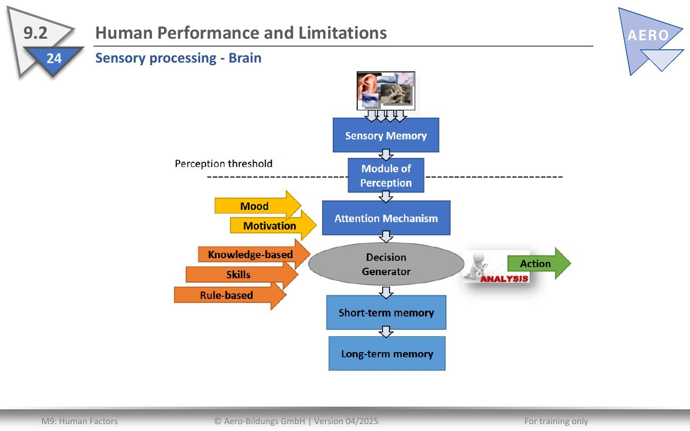
แผนภาพแสดงกระบวนการประมวลผลข้อมูลของสมอง ตั้งแต่รับสิ่งเร้าทางประสาทสัมผัส ผ่านความจำระยะสั้น จนถึงการตัดสินใจและการกระทำ โดยได้รับอิทธิพลจากอารมณ์ แรงจูงใจ ความรู้ ทักษะ และกฎเกณฑ์ที่มีอยู่ — ดูภาพต้นฉบับประกอบ
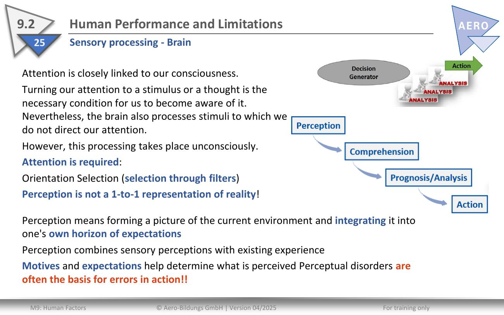
ความสนใจ (Attention) เชื่อมโยงใกล้ชิดกับจิตสำนึกของเรา การให้ความสนใจต่อสิ่งเร้าหรือความคิดหนึ่งๆ เป็นเงื่อนไขที่จำเป็นให้เราตระหนักถึงมัน อย่างไรก็ตาม สมองยังคงประมวลผลสิ่งเร้าที่เราไม่ได้ให้ความสนใจโดยตรงด้วย เพียงแต่การประมวลผลนี้เกิดขึ้นโดยไม่รู้ตัว
ความสนใจจำเป็นสำหรับ: การปรับทิศทาง (Orientation) และการคัดเลือก (Selection ผ่านการกรอง)
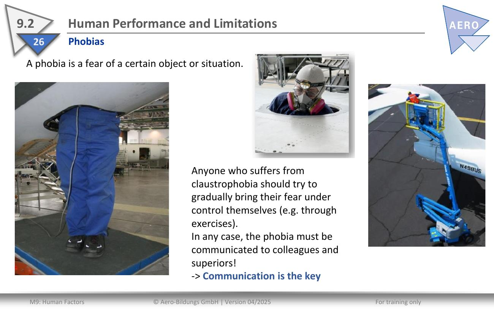
ผู้ที่มีอาการกลัวที่แคบ (Claustrophobia) ควรพยายามค่อยๆ ควบคุมความกลัวของตนเอง (เช่น ผ่านการฝึกฝน)
ไม่ว่าในกรณีใด ต้องสื่อสารเรื่องความกลัวนี้ให้เพื่อนร่วมงานและหัวหน้างานทราบ!
→ การสื่อสารคือกุญแจสำคัญ
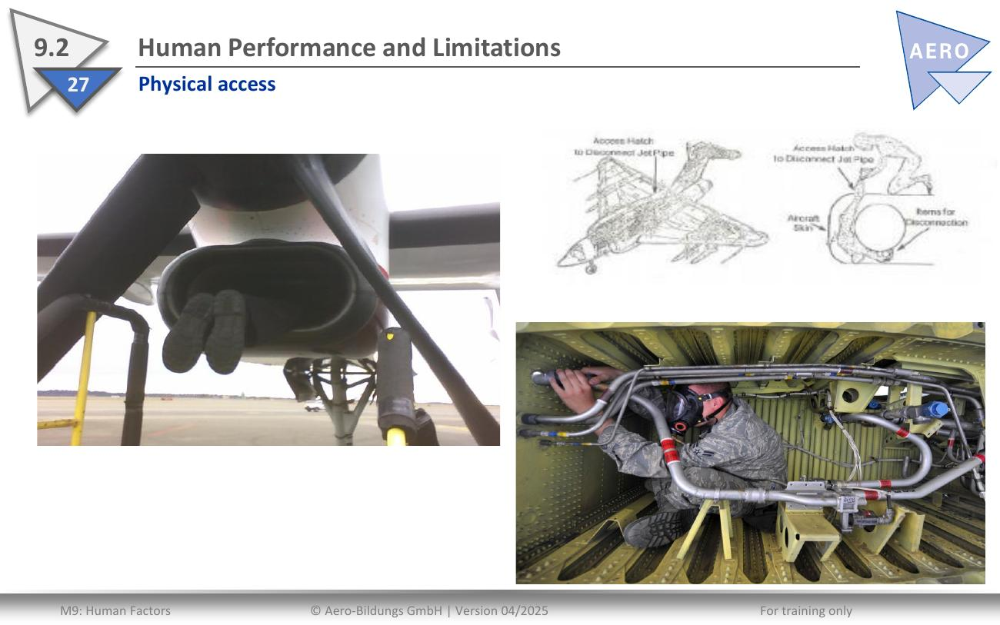
การเข้าถึงได้ (Accessibility) หมายถึงระดับความง่ายในการเข้าถึงบางสิ่ง — ในบริบทงานซ่อมบำรุง หมายถึงความสามารถในการเข้าถึงจุดทำงานหรือส่วนประกอบของอากาศยานได้อย่างปลอดภัยและมีประสิทธิภาพ
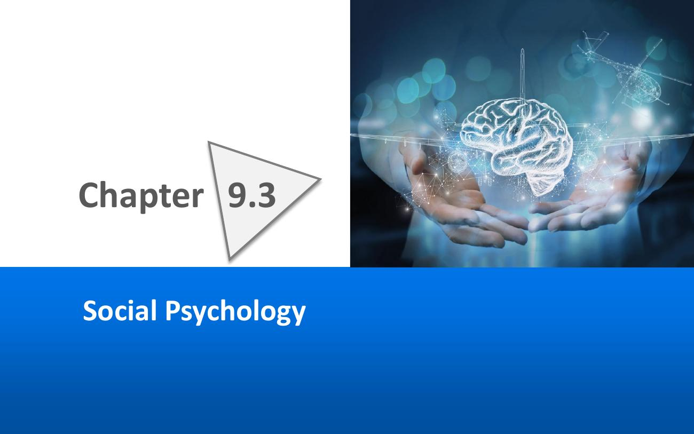
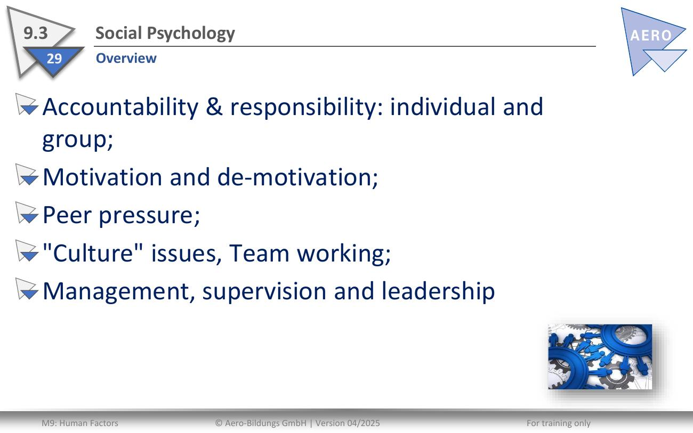
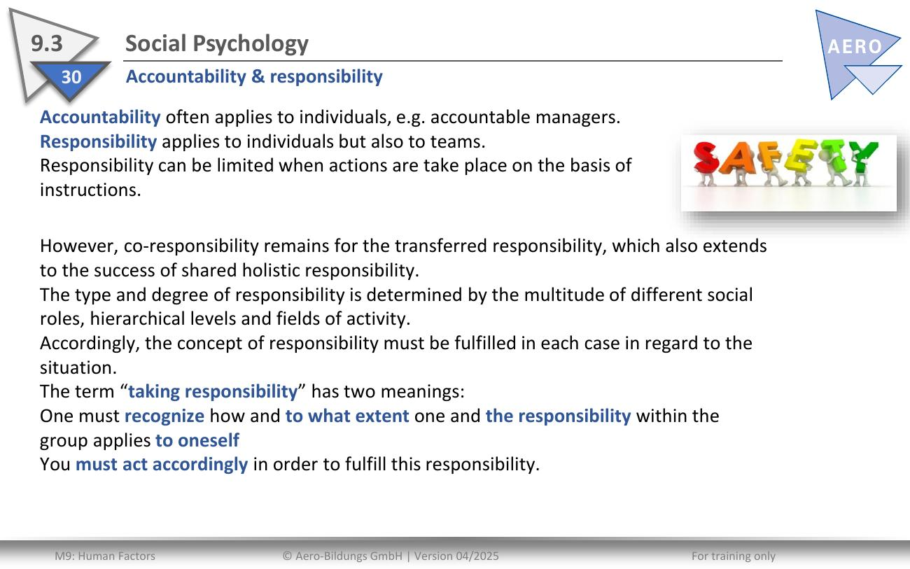
Accountability มักใช้กับบุคคล เช่น ผู้บริหารที่รับผิดชอบ (accountable manager) ส่วน Responsibility ใช้ได้ทั้งกับบุคคลและทีม
ความรับผิดชอบ (responsibility) อาจถูกจำกัดเมื่อการกระทำนั้นเป็นไปตามคำสั่ง แต่ยังคงมีความรับผิดชอบร่วมกันสำหรับความรับผิดชอบที่ถูกส่งต่อ ซึ่งครอบคลุมถึงความสำเร็จของความรับผิดชอบองค์รวมร่วมกันด้วย
ประเภทและระดับของความรับผิดชอบถูกกำหนดโดยบทบาททางสังคมที่หลากหลาย ระดับชั้นการบังคับบัญชา และขอบเขตกิจกรรมต่างๆ ดังนั้นแนวคิดเรื่องความรับผิดชอบจึงต้องพิจารณาตามสถานการณ์ในแต่ละกรณี
คำว่า “การรับผิดชอบ (taking responsibility)” มีความหมาย 2 ด้าน:
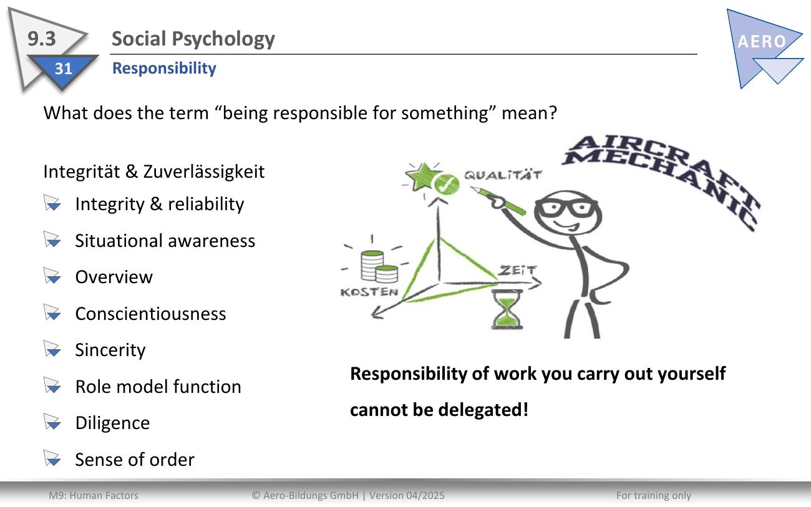
คำว่า “รับผิดชอบต่อบางสิ่ง” หมายถึงอะไร?
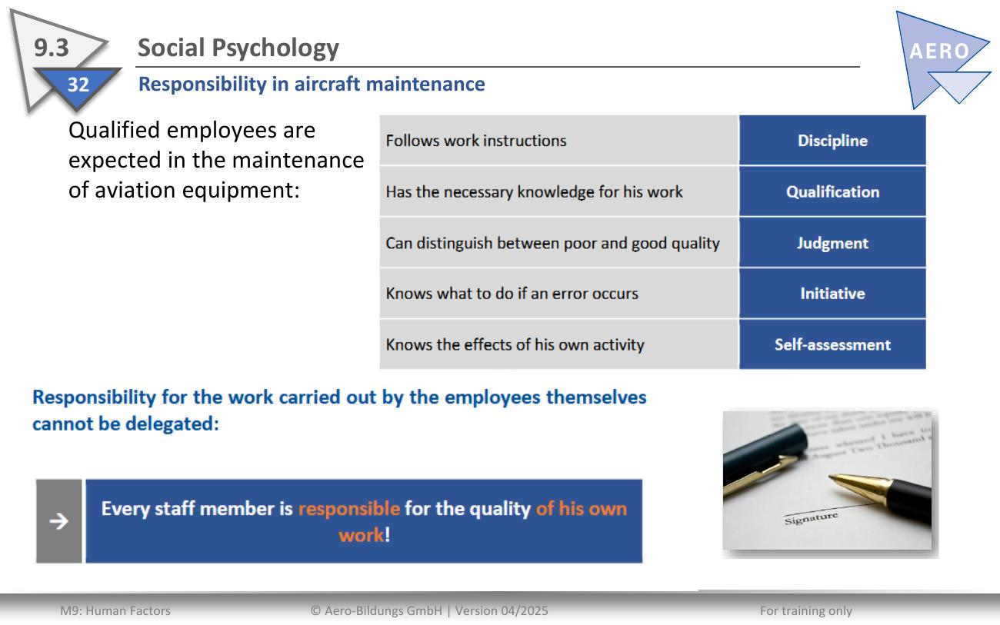
สิ่งที่คาดหวังจากพนักงานที่มีคุณสมบัติในงานซ่อมบำรุงอากาศยาน ได้แก่ วินัย คุณสมบัติที่เหมาะสม วิจารณญาณ ความคิดริเริ่ม และความสามารถประเมินตนเอง — ดูรายละเอียดในภาพต้นฉบับประกอบ
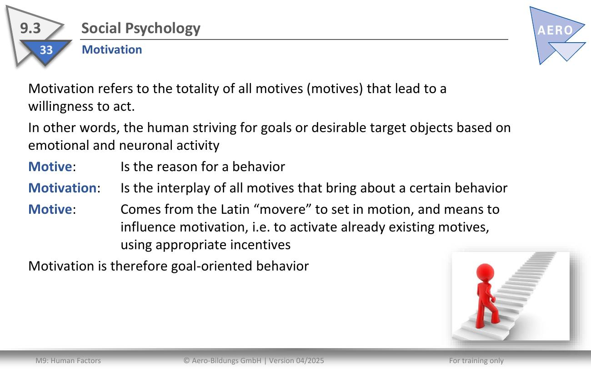
แรงจูงใจ (Motivation) คือผลรวมของแรงขับ (motives) ทั้งหมดที่นำไปสู่ความพร้อมในการกระทำ กล่าวอีกนัยหนึ่งคือ การไล่ตามเป้าหมายหรือสิ่งที่พึงปรารถนาของมนุษย์ โดยอาศัยกิจกรรมทางอารมณ์และระบบประสาท
| คำศัพท์ | ความหมาย |
|---|---|
| แรงขับ (Motive) | สาเหตุของพฤติกรรม |
| แรงจูงใจ (Motivation) | ปฏิสัมพันธ์ของแรงขับทั้งหมดที่ก่อให้เกิดพฤติกรรมหนึ่งๆ |
| กระตุ้น (Motive) | มาจากภาษาละติน "movere" (ทำให้เคลื่อนไหว) หมายถึงการกระตุ้นแรงจูงใจ คือการกระตุ้นแรงขับที่มีอยู่แล้วด้วยสิ่งจูงใจที่เหมาะสม |
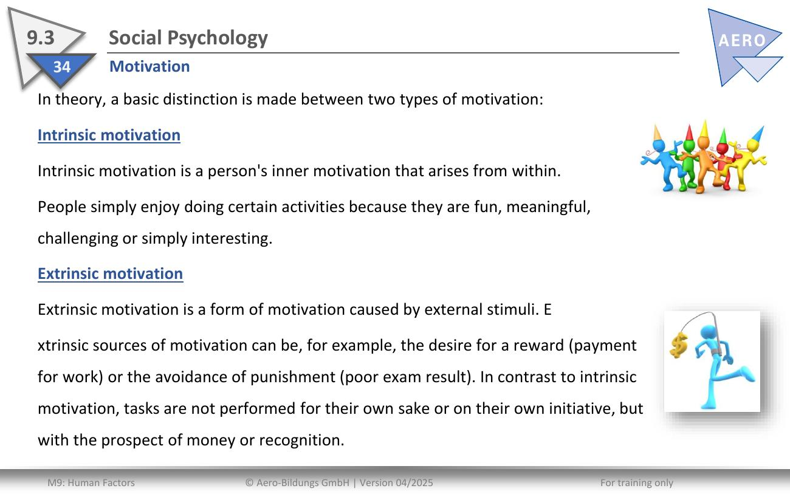
ตามทฤษฎีแบ่งแรงจูงใจออกเป็น 2 ประเภทหลัก:
เป็นแรงจูงใจภายในที่เกิดขึ้นเองของแต่ละบุคคล ผู้คนรู้สึกสนุกกับการทำกิจกรรมบางอย่างเพียงเพราะมันสนุก มีความหมาย ท้าทาย หรือน่าสนใจในตัวมันเอง
เป็นรูปแบบแรงจูงใจที่เกิดจากสิ่งเร้าภายนอก เช่น ความต้องการรางวัล (ค่าตอบแทนจากงาน) หรือการหลีกเลี่ยงการลงโทษ (ผลสอบที่ไม่ดี) ต่างจากแรงจูงใจภายใน งานไม่ได้ทำเพื่อตัวมันเองหรือจากความคิดริเริ่มของตนเอง แต่ทำโดยคาดหวังเงินหรือการยอมรับ
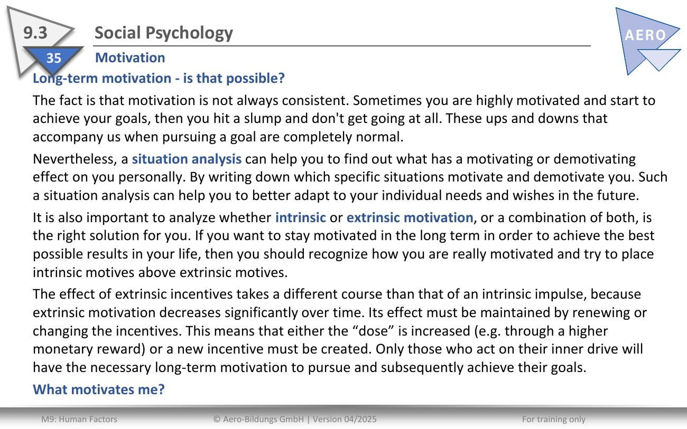
ความจริงคือแรงจูงใจไม่คงที่ตลอดเวลา บางครั้งมีแรงจูงใจสูงและเริ่มดำเนินการตามเป้าหมาย แต่แล้วก็หมดไฟและไม่คืบหน้าเลย ความขึ้นลงเหล่านี้ที่เกิดขึ้นระหว่างการไล่ตามเป้าหมายเป็นเรื่องปกติอย่างสมบูรณ์
อย่างไรก็ตาม การวิเคราะห์สถานการณ์สามารถช่วยให้คุณค้นพบว่าอะไรมีผลกระตุ้นหรือลดทอนแรงจูงใจของคุณเป็นการส่วนตัว โดยการจดบันทึกว่าสถานการณ์ใดกระตุ้นและสถานการณ์ใดลดทอนแรงจูงใจของคุณ การวิเคราะห์แบบนี้ช่วยให้คุณปรับตัวเข้ากับความต้องการและความปรารถนาส่วนบุคคลได้ดีขึ้นในอนาคต
สิ่งสำคัญคือต้องวิเคราะห์ด้วยว่าแรงจูงใจภายใน แรงจูงใจภายนอก หรือทั้งสองอย่างรวมกัน คือทางออกที่เหมาะกับคุณ หากต้องการรักษาแรงจูงใจในระยะยาวเพื่อให้ได้ผลลัพธ์ที่ดีที่สุดในชีวิต ควรตระหนักว่าแท้จริงแล้วอะไรเป็นแรงจูงใจของคุณ และพยายามจัดให้แรงขับภายในอยู่เหนือแรงขับภายนอก
ผลของสิ่งจูงใจภายนอกดำเนินไปต่างจากแรงกระตุ้นภายใน เพราะแรงจูงใจภายนอกจะลดลงอย่างมีนัยสำคัญตามเวลา ต้องรักษาผลไว้ด้วยการต่ออายุหรือเปลี่ยนสิ่งจูงใจ (เช่น เพิ่ม “ปริมาณ” ผ่านรางวัลทางการเงินที่สูงขึ้น หรือต้องสร้างสิ่งจูงใจใหม่) ผู้ที่กระทำจากแรงขับภายในเท่านั้นจะมีแรงจูงใจที่จำเป็นในระยะยาวเพื่อไล่ตามและบรรลุเป้าหมายของตนในที่สุด
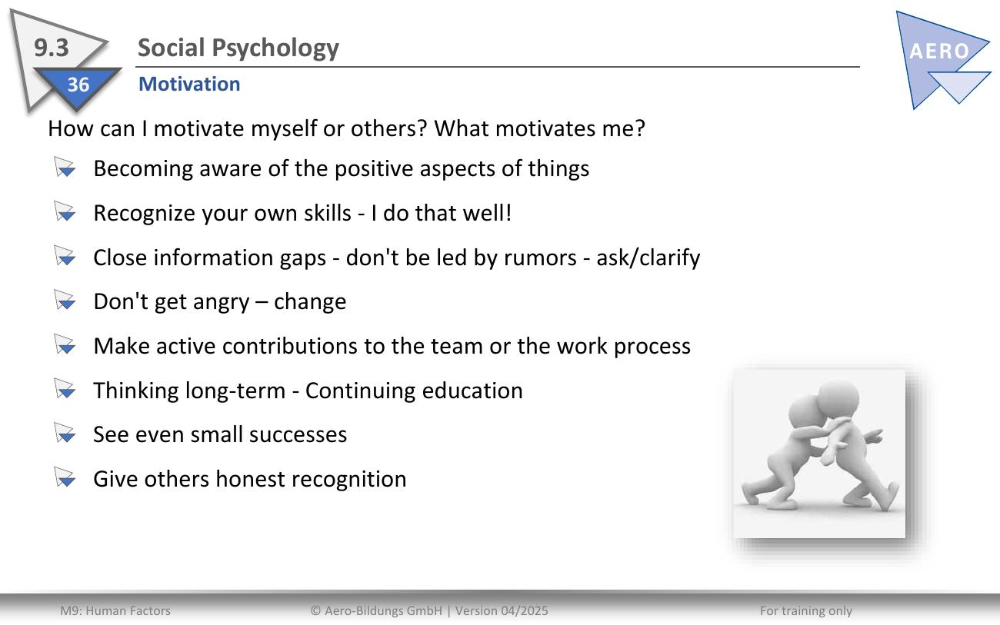
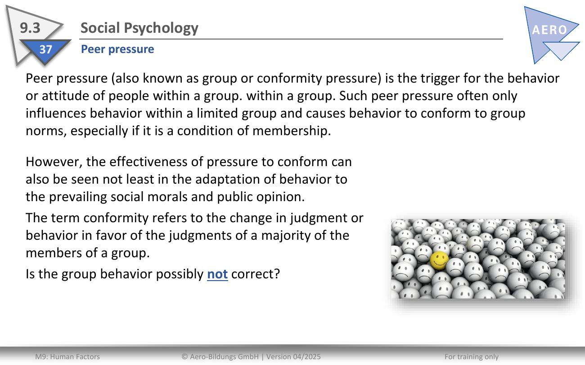
แรงกดดันจากเพื่อน (Peer Pressure) หรือที่เรียกว่าแรงกดดันจากกลุ่มหรือความสอดคล้อง (conformity) เป็นตัวกระตุ้นพฤติกรรมหรือทัศนคติของบุคคลภายในกลุ่ม มักส่งผลเฉพาะภายในกลุ่มที่จำกัด และทำให้พฤติกรรมปรับตามบรรทัดฐานของกลุ่ม โดยเฉพาะเมื่อถือเป็นเงื่อนไขของการเป็นสมาชิก
ประสิทธิผลของแรงกดดันให้สอดคล้องยังเห็นได้จากการปรับตัวตามศีลธรรมทางสังคมและความคิดเห็นสาธารณะที่แพร่หลาย
ความสอดคล้อง (Conformity) หมายถึงการเปลี่ยนแปลงการตัดสินหรือพฤติกรรมเพื่อสนับสนุนการตัดสินของสมาชิกส่วนใหญ่ในกลุ่ม
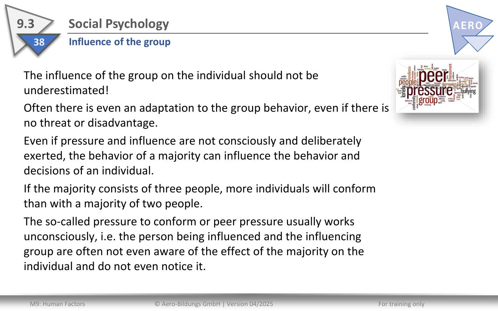
อิทธิพลของกลุ่มต่อบุคคลไม่ควรถูกมองข้าม! บ่อยครั้งเกิดการปรับตัวตามพฤติกรรมกลุ่มแม้ไม่มีการข่มขู่หรือความเสียเปรียบใดๆ
แม้แรงกดดันและอิทธิพลจะไม่ถูกใช้อย่างมีเจตนาและรู้ตัว พฤติกรรมของเสียงส่วนใหญ่ก็สามารถส่งผลต่อพฤติกรรมและการตัดสินใจของบุคคลได้ หากเสียงส่วนใหญ่ประกอบด้วย 3 คน จะมีคนปรับตัวตามมากกว่าเมื่อเสียงส่วนใหญ่มีเพียง 2 คน
แรงกดดันให้สอดคล้อง (peer pressure) มักทำงานโดยไม่รู้ตัว กล่าวคือทั้งผู้ที่ได้รับอิทธิพลและกลุ่มที่มีอิทธิพลมักไม่รู้ตัวถึงผลของเสียงส่วนใหญ่ต่อบุคคลนั้น และไม่ทันสังเกตด้วยซ้ำ
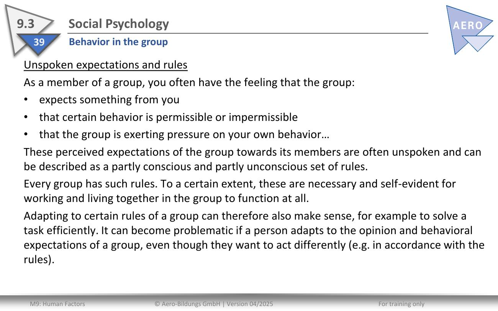
ความคาดหวังและกฎที่ไม่ได้พูดออกมา ในฐานะสมาชิกกลุ่ม คุณมักรู้สึกว่า:
ความคาดหวังที่รับรู้ได้เหล่านี้ของกลุ่มที่มีต่อสมาชิก มักไม่ถูกพูดออกมาตรงๆ และสามารถอธิบายได้ว่าเป็นชุดกฎที่รู้ตัวบางส่วนและไม่รู้ตัวบางส่วน ทุกกลุ่มมีกฎแบบนี้ ซึ่งในระดับหนึ่งจำเป็นและเป็นที่เข้าใจกันดีเพื่อให้การทำงานและการอยู่ร่วมกันในกลุ่มดำเนินไปได้
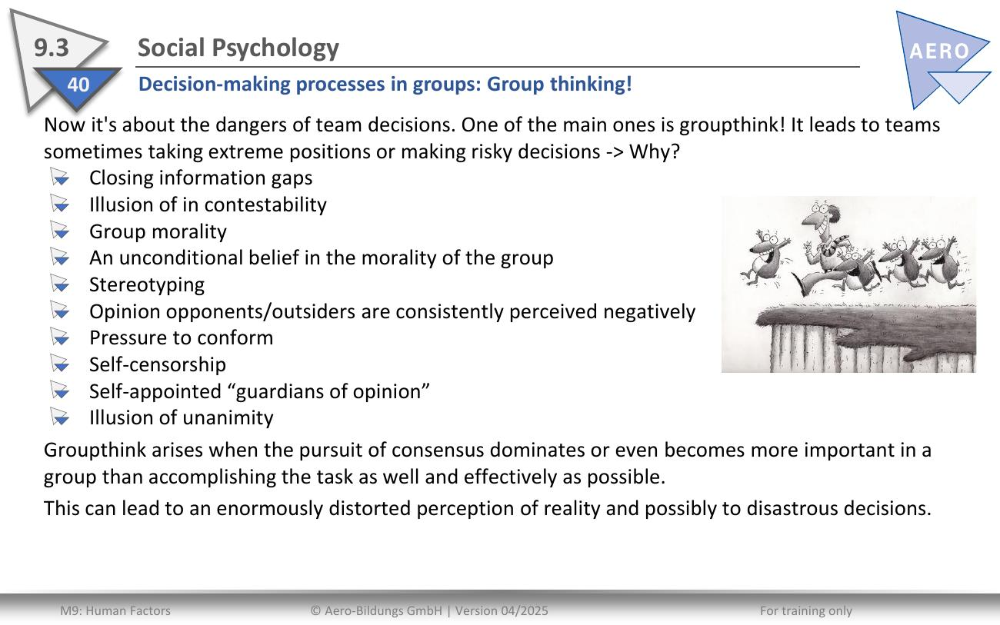
อันตรายสำคัญของการตัดสินใจแบบทีมคือ Groupthink! ซึ่งทำให้ทีมบางครั้งยึดจุดยืนสุดโต่งหรือตัดสินใจเสี่ยงเกินไป
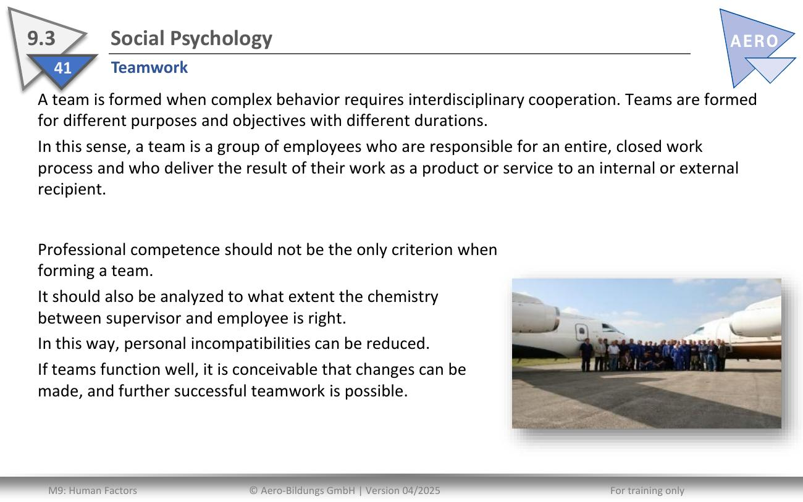
ทีมเกิดขึ้นเมื่อพฤติกรรมที่ซับซ้อนต้องการความร่วมมือข้ามสาขาวิชา ทีมถูกก่อตั้งขึ้นเพื่อวัตถุประสงค์และเป้าหมายที่แตกต่างกัน โดยมีระยะเวลาแตกต่างกันไป
ในความหมายนี้ ทีมคือกลุ่มพนักงานที่รับผิดชอบกระบวนการทำงานทั้งหมดที่ครบวงจร และส่งมอบผลงานเป็นผลิตภัณฑ์หรือบริการให้แก่ผู้รับภายในหรือภายนอกองค์กร
ความสามารถทางวิชาชีพไม่ควรเป็นเกณฑ์เดียวในการสร้างทีม ควรวิเคราะห์ด้วยว่าเคมีระหว่างหัวหน้างานและพนักงานเข้ากันได้ดีเพียงใด วิธีนี้ช่วยลดความไม่เข้ากันในระดับบุคคลได้ หากทีมทำงานได้ดี ก็อาจปรับเปลี่ยนได้ และการทำงานเป็นทีมที่ประสบความสำเร็จต่อไปก็เป็นไปได้
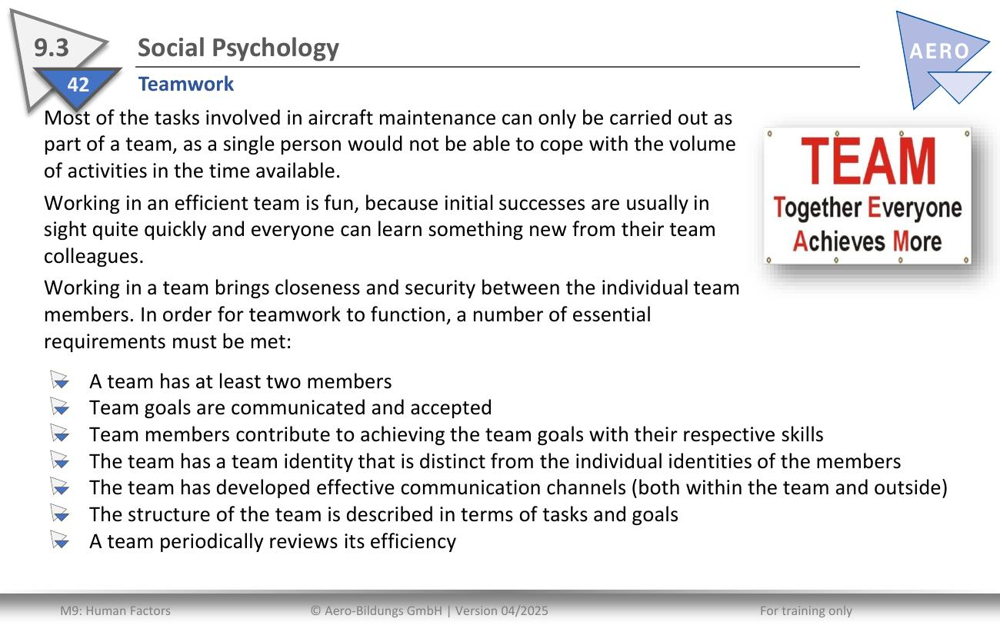
งานส่วนใหญ่ในงานซ่อมบำรุงอากาศยานทำได้ก็ต่อเมื่อเป็นส่วนหนึ่งของทีมเท่านั้น เพราะบุคคลเพียงคนเดียวไม่สามารถรับมือกับปริมาณกิจกรรมภายในเวลาที่มีได้
การทำงานในทีมที่มีประสิทธิภาพเป็นเรื่องสนุก เพราะมักเห็นความสำเร็จเบื้องต้นได้ค่อนข้างเร็ว และทุกคนสามารถเรียนรู้สิ่งใหม่จากเพื่อนร่วมทีมได้ การทำงานเป็นทีมยังนำมาซึ่งความใกล้ชิดและความมั่นคงระหว่างสมาชิกทีมแต่ละคน
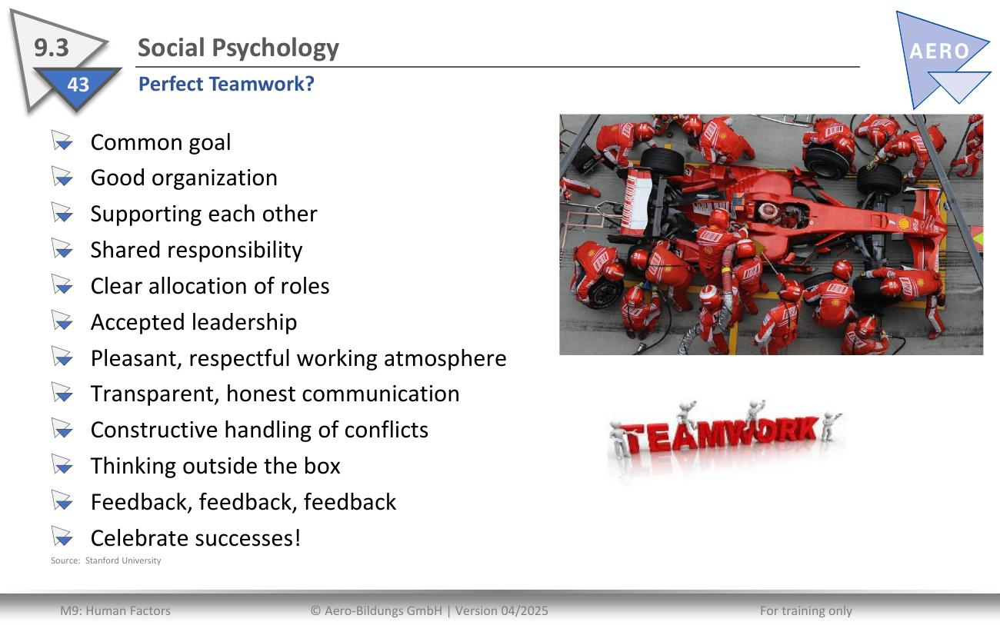
ที่มา: การศึกษาของมหาวิทยาลัยสแตนฟอร์ด (Source: Stanford University)
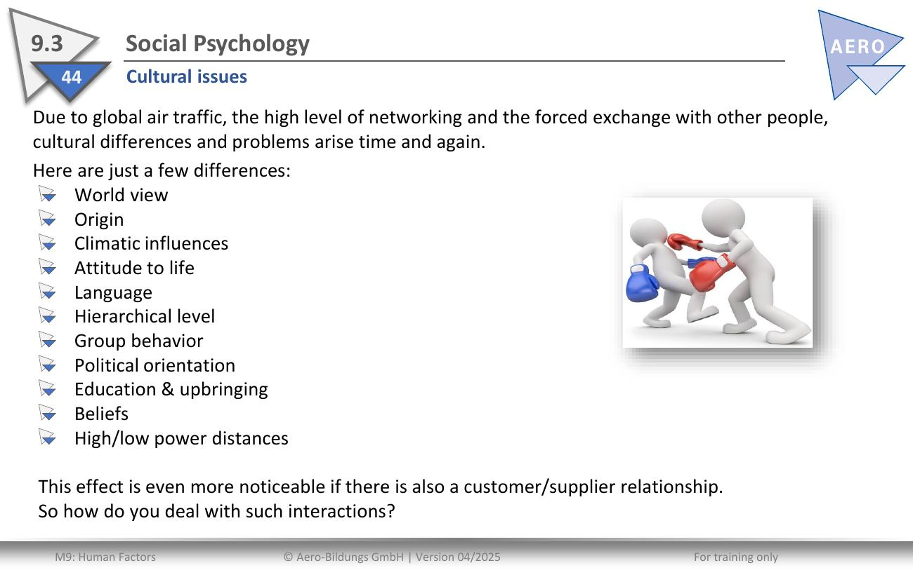
จากการจราจรทางอากาศระดับโลก ระดับการเชื่อมโยงที่สูง และการแลกเปลี่ยนกับผู้อื่นที่หลีกเลี่ยงไม่ได้ ความแตกต่างและปัญหาทางวัฒนธรรมจึงเกิดขึ้นซ้ำแล้วซ้ำเล่า ตัวอย่างความแตกต่าง:
ผลกระทบนี้ยิ่งเห็นชัดขึ้นเมื่อมีความสัมพันธ์แบบลูกค้า/ผู้จัดหาเข้ามาเกี่ยวข้องด้วย ดังนั้นเราควรรับมือกับปฏิสัมพันธ์เหล่านี้อย่างไร?
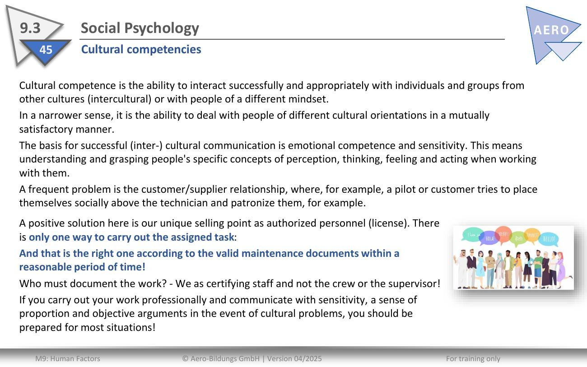
ความสามารถทางวัฒนธรรม คือความสามารถในการปฏิสัมพันธ์กับบุคคลและกลุ่มจากวัฒนธรรมอื่น (ข้ามวัฒนธรรม) หรือผู้ที่มีแนวคิดต่างกันได้อย่างเหมาะสมและประสบความสำเร็จ ในความหมายที่แคบกว่า คือความสามารถในการรับมือกับผู้ที่มีพื้นฐานวัฒนธรรมต่างกันในแบบที่ทั้งสองฝ่ายพึงพอใจ
พื้นฐานของการสื่อสารข้ามวัฒนธรรมที่ประสบความสำเร็จ คือความสามารถทางอารมณ์และความอ่อนไหว ซึ่งหมายถึงการทำความเข้าใจแนวคิดเฉพาะของแต่ละคนในการรับรู้ การคิด ความรู้สึก และการกระทำ เมื่อทำงานร่วมกับพวกเขา
ปัญหาที่พบบ่อยคือความสัมพันธ์แบบลูกค้า/ผู้จัดหา เช่น นักบินหรือลูกค้าพยายามวางตัวเหนือช่างเทคนิคทางสังคมและแสดงท่าทีข่มขู่
ทางออกเชิงบวกในที่นี้คือจุดขายเฉพาะตัวของเราในฐานะบุคลากรที่ได้รับอนุญาต (ผู้ถือใบอนุญาต) มีเพียงวิธีเดียวเท่านั้นในการปฏิบัติงานที่ได้รับมอบหมาย และนั่นคือวิธีที่ถูกต้องตามเอกสารซ่อมบำรุงที่ใช้บังคับภายในระยะเวลาที่เหมาะสม!
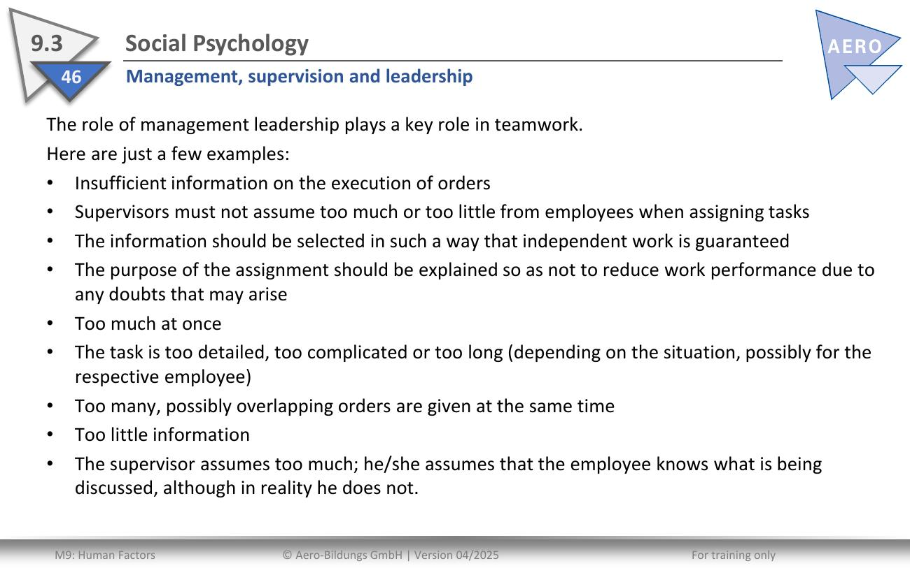
บทบาทของภาวะผู้นำจากฝ่ายบริหารมีความสำคัญอย่างยิ่งต่อการทำงานเป็นทีม ตัวอย่างปัญหาที่พบบ่อย:
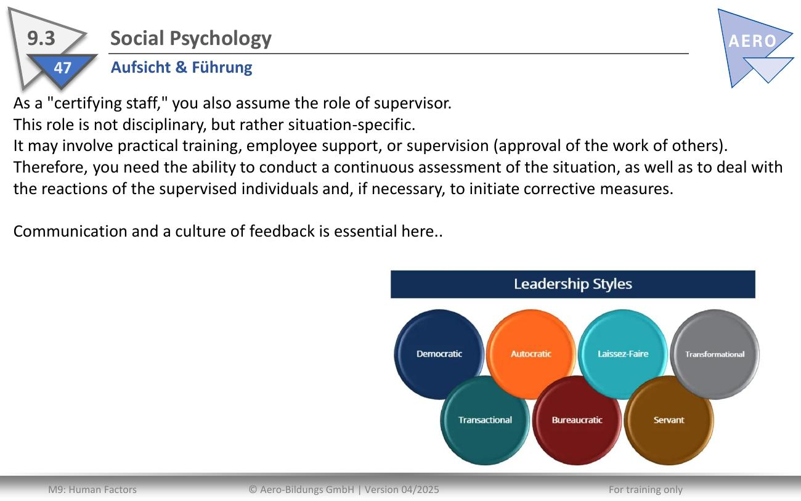
ในฐานะ “Certifying Staff” คุณยังรับบทบาทเป็นผู้กำกับดูแล (supervisor) ด้วย บทบาทนี้ไม่ใช่บทบาทเชิงวินัย แต่ขึ้นอยู่กับสถานการณ์เฉพาะหน้า
อาจรวมถึงการฝึกอบรมภาคปฏิบัติ การสนับสนุนพนักงาน หรือการกำกับดูแล (การอนุมัติงานของผู้อื่น) ดังนั้นคุณจึงต้องมีความสามารถในการประเมินสถานการณ์อย่างต่อเนื่อง รวมถึงรับมือกับปฏิกิริยาของผู้ที่อยู่ภายใต้การกำกับดูแล และริเริ่มมาตรการแก้ไขเมื่อจำเป็น
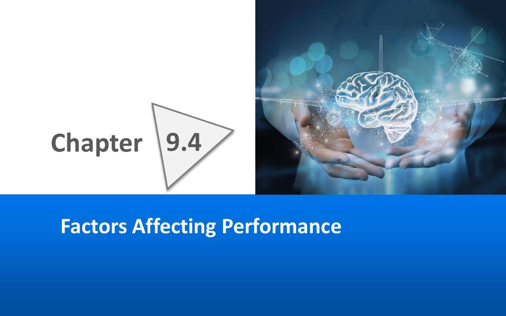
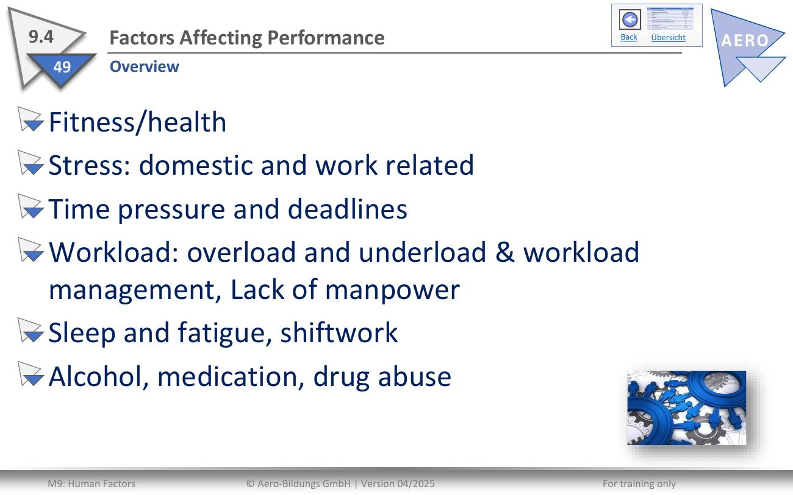
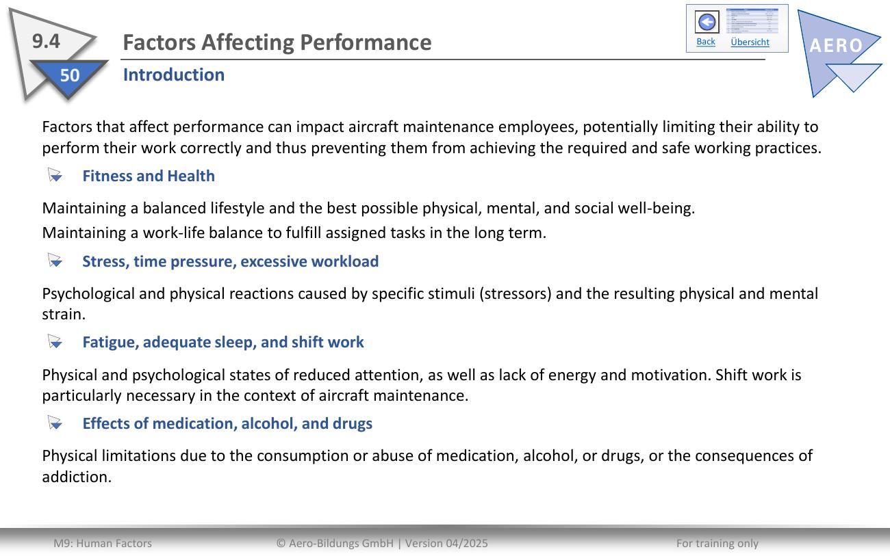
ปัจจัยที่ส่งผลต่อสมรรถนะสามารถกระทบพนักงานซ่อมบำรุงอากาศยาน อาจจำกัดความสามารถในการปฏิบัติงานอย่างถูกต้อง จึงทำให้ไม่สามารถบรรลุแนวปฏิบัติงานที่จำเป็นและปลอดภัยได้
| ปัจจัย | คำอธิบาย |
|---|---|
| ความฟิตและสุขภาพ | การรักษาสมดุลชีวิตและความเป็นอยู่ที่ดีทั้งร่างกาย จิตใจ และสังคมให้ดีที่สุด รวมถึงสมดุลชีวิต-การทำงานเพื่อทำงานที่ได้รับมอบหมายให้สำเร็จในระยะยาว |
| ความเครียด แรงกดดันด้านเวลา ภาระงานมากเกินไป | ปฏิกิริยาทางจิตใจและร่างกายที่เกิดจากสิ่งกระตุ้นเฉพาะ (stressors) และความตึงเครียดทางกายและใจที่ตามมา |
| ความล้า การนอนหลับที่เพียงพอ และการทำงานเป็นกะ | สภาวะทางกายและจิตใจที่มีความสนใจลดลง รวมถึงขาดพลังงานและแรงจูงใจ การทำงานเป็นกะเป็นสิ่งจำเป็นอย่างยิ่งในบริบทงานซ่อมบำรุงอากาศยาน |
| ผลของยา แอลกอฮอล์ และยาเสพติด | ข้อจำกัดทางร่างกายจากการบริโภคหรือใช้ในทางที่ผิดซึ่งยา แอลกอฮอล์ หรือยาเสพติด หรือผลจากการเสพติด |
งานซ่อมบำรุงอากาศยานหรือชิ้นส่วนต้องใช้แรงกายมาก มักต้องทำงานในสภาพแวดล้อมทางกายภาพที่หลากหลายและอาจต้องทำงานทุกช่วงเวลาของวัน (24/7)
หลายปัจจัยส่งผลต่อสุขภาพของพนักงานและความพร้อมในการปฏิบัติหน้าที่ ผลกระทบต่อแต่ละบุคคลขึ้นกับหลายปัจจัย เช่น ชนิดงานที่ทำ สภาพแวดล้อมที่เผชิญ ความมั่นคงส่วนบุคคล หรือสถานการณ์ชีวิตปัจจุบันของผู้นั้น ความรับผิดชอบในการดูแลรักษาวิถีชีวิตที่ดีต่อสุขภาพเป็นของทุกคน
การรับมือกับความต้องการต่างๆ เป็นส่วนหนึ่งของชีวิตที่หลีกเลี่ยงไม่ได้สำหรับทุกคน ในระดับหนึ่งความต้องการเหล่านี้ช่วยกระตุ้นและเป็นประโยชน์ แต่เมื่อเกินความสามารถส่วนบุคคลในการรับมือ ผลลัพธ์คือความเครียดเชิงลบและอาจกลายเป็นปัญหาได้!
สิ่งกระตุ้นเฉพาะ (stressors) ก่อให้เกิดความเครียด:
ความเครียดจึงเป็นปฏิกิริยาทั้งเชิงบวกและเชิงลบของมนุษย์ต่อความตึงเครียดทางร่างกายและจิตใจ
กระตุ้น น่าตื่นเต้น และให้ความพึงพอใจ ส่งผลให้: ประสิทธิภาพเพิ่มขึ้น, แรงจูงใจเพิ่มขึ้น, ความสนใจและสมาธิเพิ่มขึ้น
ลดทอนประสิทธิภาพ และแสดงออกผ่าน:
ระดับการกระตุ้น สิ่งเร้า และความต้องการในระดับหนึ่งเป็นประโยชน์ต่อบุคคล เป็นแรงผลักดันโดยพื้นฐาน แต่หากมากเกินไปจะนำไปสู่ผลเสีย การมีสิ่งกระตุ้นน้อยเกินไปก็เป็นปัญหาได้เช่นกัน
แต่ละคนต้องการระดับความต้องการที่ (เหมาะสมที่สุด) แตกต่างกันเพื่อทำงานให้สำเร็จอย่างมีแรงจูงใจ บางคนรู้สึกล้นมือเมื่อต้องทำมากกว่าหนึ่งงานพร้อมกัน ในขณะที่บางคนดูเหมือนไร้ความเครียดและมีความสุขเมื่อถูกขอให้รับมือกับงานหรือความท้าทายที่เพิ่มมากขึ้นเรื่อยๆ
| ประเภท | ลักษณะ |
|---|---|
| Hypostress | ภาวะถูกท้าทายน้อยเกินไป มองได้ว่าเป็นความเบื่อหน่ายถาวรหรือถูกกระตุ้นน้อยเกินไป |
| Eustress (จากภาษากรีก EU แปลว่าดี) | ความเครียดที่กระตุ้นและดี ช่วยจูงใจ ให้กำลังใจ และทำให้ทำงานที่มีอยู่สำเร็จ |
| Distress (จากภาษาละติน dis แปลว่าไม่ดี) | ความเครียดเชิงลบที่เกินความสามารถในการรับมือของบุคคล |
ขึ้นอยู่กับสภาพที่เผชิญ ความเครียดเชื่อมโยงกับผลลัพธ์ที่พึงประสงค์หรือไม่พึงประสงค์ เราผ่านระยะต่างๆ ขึ้นอยู่กับระยะเวลาของความเครียดหรือความต้องการเฉพาะหน้า
ทันทีที่เรารับรู้ความเครียด เราตอบสนองด้วยกลยุทธ์ต่างๆ:
การจัดการกับอาการของความเครียด เช่น มอบหมายภาระงาน จัดลำดับความสำคัญของงาน แก้ไขปัญหา หาทางออก ฯลฯ
นอกจากนี้ บุคลิกภาพที่แตกต่างกัน กล่าวคือแต่ละประเภท ก็มีพฤติกรรมตอบสนองที่ต่างกันไปด้วย
บางครั้งไม่สามารถแก้ปัญหาได้เพราะอยู่นอกเหนือการควบคุมของบุคคล เช่น ในสถานการณ์ฉุกเฉิน... แต่มีเทคนิคที่พิสูจน์แล้วช่วยรับมือกับความเครียดเชิงลบได้:
ในสภาพแวดล้อมเชิงพาณิชย์ ยากที่จะปลอดจากแรงกดดันด้านเวลาและความเครียดโดยสิ้นเชิง องค์กรต้องปฏิบัติตามข้อกำหนดทางกฎหมายการบินที่บังคับใช้!
การบริหารภาระงานเชิงปฏิบัติการในงานซ่อมบำรุงอากาศยานควรครอบคลุม:
คุณจะรับมือกับสิ่งนี้อย่างไร? — พื้นที่ตึงเครียดระหว่าง คุณภาพและความสมควรเดินอากาศ (Quality & Airworthiness), เวลา (Time), และต้นทุน (Costs)
อุตสาหกรรมการบินและงานซ่อมบำรุงอากาศยาน/ชิ้นส่วน เช่นเดียวกับอุตสาหกรรมเชิงพาณิชย์อื่นๆ ถูกขับเคลื่อนด้วยกำหนดส่ง milestone และตารางเวลา แรงกดดันนี้จึงส่งผลกระทบต่อพนักงานทุกระดับในทุกส่วนงาน
ฝ่ายบริหารมีแรงกดดันตามสัญญาที่ต้องส่งมอบอากาศยานให้เสร็จตามกรอบเวลาที่ลูกค้ากำหนด แรงผลักดันให้เพิ่มอัตราการใช้งานอากาศยานหมายถึงต้องทำงานซ่อมบำรุงให้มากขึ้นในเวลาที่น้อยลง ซึ่งมักบรรลุได้ผ่านการทำงาน 3 กะ เพิ่มประสิทธิภาพ และแรงกดดันด้านเวลา
ท้ายที่สุดแล้ว ความตรงต่อเวลาและความพึงพอใจของลูกค้า/ผู้โดยสารเป็นสิ่งสำคัญลำดับต้น เห็นได้ชัดว่าแรงกดดันทางเศรษฐกิจของฝ่ายบริหารส่งผลไปถึงทุกจุดทำงานในบริษัท
ดังนั้นช่างเทคนิคซ่อมบำรุงอากาศยานจึงมีแรงขับเคลื่อนสองด้าน: การทำตามกำหนดเวลา/วันที่ที่ได้รับแจ้ง และความรับผิดชอบในการทำงานอย่างปลอดภัย ความขัดแย้งที่อาจเกิดขึ้นระหว่างแรงขับเคลื่อนทั้งสองนี้ก่อให้เกิดปัญหา
พนักงานทุกคนอยู่ในพื้นที่ตึงเครียดระหว่างความรับผิดชอบด้านคุณภาพ ต้นทุน และเวลาอยู่ตลอดเวลา นอกจากนี้อาจมีแรงกดดันด้านเวลาที่กำหนดขึ้นเอง เพื่อทำงาน/ภารกิจให้เสร็จก่อนพักหรือก่อนหมดกะ หรือแม้แต่เพื่อความก้าวหน้าในอาชีพ
แน่นอนว่าแรงกดดันด้านเวลาที่มากเกินไป (ไม่ว่าจะเป็นจริงหรือกำหนดขึ้นเอง) ลดความรอบคอบและความใส่ใจในการทำงาน และอาจเพิ่มความเสี่ยงของข้อผิดพลาด ซึ่งท้ายที่สุดอาจนำไปสู่อุบัติการณ์และอุบัติเหตุได้
จำเป็นต้องลดแรงกดดันเชิงพาณิชย์ต่อผู้ที่เกี่ยวข้องในงานซ่อมบำรุงอากาศยาน และมั่นใจว่าประเด็นความสมควรเดินอากาศมีความสำคัญเหนือประเด็นเชิงพาณิชย์เสมอ! สิ่งนี้ต้องอาศัยวัฒนธรรมและการนำมาตรฐานไปปฏิบัติภายในองค์กร
ผู้รับผิดชอบต้องพิจารณา: ความพร้อมของอากาศยาน, ความพร้อมของอะไหล่, ความพร้อมของโรงเก็บอากาศยาน, ความพร้อมของเครื่องมือและอุปกรณ์ภาคพื้น, เวลาที่มีจริงในการทำงานให้เสร็จ, คู่มือที่จำเป็นทั้งหมดพร้อมใช้งานหรือไม่, เวลาสำหรับส่งมอบงานระหว่างกะ และที่สำคัญที่สุด... กำลังคนจริงที่มีคุณสมบัติและประสบการณ์ที่เหมาะสม
145.A.30(d): องค์กรต้องมีระบบวางแผนความพร้อมของบุคลากร เพื่อให้มั่นใจว่าองค์กรมีบุคลากรที่มีคุณสมบัติเหมาะสมเพียงพอสำหรับวางแผน ปฏิบัติงาน ควบคุมดูแล ตรวจสอบ และติดตามกิจกรรมขององค์กรตามเงื่อนไขการอนุมัติ
AMC 145.A.30(d): การมีบุคลากรเพียงพอ หมายถึงองค์กรจ้างหรือทำสัญญากับบุคลากรที่มีความสามารถ ตามรายละเอียดในแผนชั่วโมงคนทำงาน โดยอย่างน้อยครึ่งหนึ่งของบุคลากรที่ปฏิบัติงานซ่อมบำรุงในแต่ละเวิร์คช็อป โรงเก็บอากาศยาน หรือลานจอด ในกะใดๆ ควรเป็นพนักงานประจำ เพื่อรักษาเสถียรภาพขององค์กร
การขาดงานตามแผน (สำหรับฝึกอบรม วันหยุด ฯลฯ) ควรถูกนำมาพิจารณาเมื่อจัดทำแผนชั่วโมงคนทำงาน แผนชั่วโมงคนทำงานซ่อมบำรุงควรได้รับการทบทวนอย่างน้อยทุก 3 เดือนและปรับปรุงเมื่อจำเป็น ความเบี่ยงเบนอย่างมีนัยสำคัญจากแผนควรถูกรายงานผ่านผู้จัดการฝ่ายไปยังผู้จัดการติดตามการปฏิบัติตามข้อกำหนด (compliance monitoring manager) และผู้บริหารที่รับผิดชอบเพื่อทบทวน
การนอนหลับไม่ใช่แค่การฟื้นฟูร่างกายเท่านั้น ขณะที่บางส่วนของร่างกาย “ทำงานด้วยพลังงานต่ำ” ระหว่างนอน ส่วนอื่นกลับทำงานอย่างหนักมาก บางครั้งสมองของเราทำงานที่ประสิทธิภาพสูงสุด ประมวลผลประสบการณ์ในแต่ละวัน ร่างกายตอบสนองต่อสิ่งเร้าภายนอกอ่อนลง ในขณะเดียวกันกระบวนการสร้างและสลายที่สำคัญเกิดขึ้นในร่างกายระหว่างการนอนหลับ
ระหว่างการนอน เราผ่านระยะการนอนที่มีความลึกต่างกันซึ่งสลับกันซ้ำๆ ตลอดคืน กระบวนการเมแทบอลิซึม อัตราการเต้นของหัวใจ ความดันโลหิต การหายใจ ความตึงตัวของกล้ามเนื้อ และอุณหภูมิร่างกายแปรผันในแต่ละระยะการนอน มี 2 ระยะสำคัญสำหรับการฟื้นฟูระหว่างการนอน: การนอนหลับลึก (Deep sleep) — ร่างกายและจิตใจฟื้นฟูตัวเอง ซึ่งจำเป็นต่อการรักษาและซ่อมแซมร่างกายของเรา
ความล้า (Fatigue) บ่งบอกถึงความต้องการของร่างกายที่จะฟื้นตัวและซ่อมแซมตัวเอง ความล้าสามารถบรรเทาได้ด้วยการพักผ่อนเท่านั้น หรือท้ายที่สุดคือช่วงเวลาการนอนหลับ
หากรู้สึกเหนื่อยบ่อยและมีปัญหาประสิทธิภาพลดลงระหว่างวัน อาจนอนนานเกินไป น้อยเกินไป หรือมีการนอนที่ถูกรบกวน ซึ่งเป็นอันตรายในระยะยาวและอาจนำไปสู่ปัญหาสุขภาพกายและจิตใจ ควรระบุสาเหตุเหล่านี้ให้ชัดเจน เพราะอาจมีสาเหตุแฝงอื่นด้วย
งานซ่อมบำรุงอากาศยานเชิงพาณิชย์เป็นธุรกิจที่ดำเนินการตลอด 24 ชั่วโมงอย่างชัดเจน ซึ่งหมายถึงการทำงานหลายกะสำหรับผู้ปฏิบัติงานจำนวนมาก
ชั่วโมงทำงานกลางคืนและการสลับกะรบกวนรูปแบบการนอนของเรา และส่งผลต่อระดับการพักผ่อนและฟื้นตัว นาฬิกาชีวภาพภายในกำหนดว่าร่างกายต้องการอะไรและเมื่อไหร่ เป็นตัวกระตุ้นความต้องการโปรแกรมซ่อมแซมและพักฟื้นในเวลากลางคืน
เราถูกปรับให้พักผ่อนตอนกลางคืนและกระฉับกระเฉงตอนกลางวัน ผู้ที่ทำงานเป็นกะจะตระหนักถึงเรื่องนี้เป็นพิเศษ สิ่งนี้มาจากนาฬิกาชีวภาพ (Biological Clock) ซึ่งเป็นระบบซับซ้อนของร่างกาย (ความต้องการนอน/ความต้องการแสงกลางวัน การหลั่งฮอร์โมน และกระบวนการเมแทบอลิซึม) ที่ทำงานเป็นวงจร 24/25 ชั่วโมง ผู้เชี่ยวชาญเรียกสิ่งนี้ว่าจังหวะชีวิตประจำวัน (Circadian Rhythm)
ตลอดวัน มีช่วงเวลาของสมรรถนะและการพักผ่อนที่แตกต่างกัน:
อ้างอิง: 66.B.500
สมรรถนะของมนุษย์ถูกลดทอนจากการบริโภคแอลกอฮอล์หรือยาเสพติด เช่นเดียวกับการจราจรสาธารณะ การพิสูจน์การฝ่าฝืนกฎนี้ในงานซ่อมบำรุงอากาศยานนำไปสู่การจำกัดหรือเพิกถอนใบอนุญาต
บริษัทส่วนใหญ่ยังคงมีข้อตกลงพิเศษภายในที่ห้ามการบริโภคแอลกอฮอล์ ฯลฯ หากจำเป็นต้องใช้ยาเนื่องจากเจ็บป่วยหรือภาวะที่คล้ายกัน ผู้ที่เกี่ยวข้องต้องตระหนักถึงข้อจำกัดที่ตามมา
คนส่วนใหญ่ทราบดีถึงผลกดประสาทของแอลกอฮอล์ต่อระบบประสาทส่วนกลาง แม้แต่ปริมาณเล็กน้อยก็ทำให้ประสิทธิภาพลดลง เวลาตอบสนองเพิ่มขึ้น และวิจารณญาณถูกจำกัดอย่างรุนแรง
แอลกอฮอล์มีผลคล้ายยากล่อมประสาทและยานอนหลับ และคงอยู่ในเลือดเป็นระยะเวลานานพอสมควร ทุกคนควรพิจารณาว่าตนเองดื่มได้มากแค่ไหนเพื่อให้ยังคงพร้อมทำงานได้ในวันถัดไป ผลของแอลกอฮอล์อาจแย่ลงอย่างมากหากบุคคลนั้นเหนื่อย ป่วย หรือได้ใช้ยาไปแล้ว
นอกจากนี้ ผู้ที่ดื่มแอลกอฮอล์มากเกินไปเป็นประจำอาจเผชิญปัญหาในสภาพแวดล้อมทางสังคม รวมถึงปัญหาในครอบครัว กลุ่มเพื่อน คนรู้จัก และที่ทำงานด้วย
ยาใดๆ ไม่ว่าจะใช้บ่อยแค่ไหน อาจส่งผลกระทบต่อประสิทธิภาพการทำงานได้ ทั้งทางตรงหรือผ่านผลข้างเคียง พนักงานในพื้นที่ที่มีความสำคัญด้านความปลอดภัย เช่น งานซ่อมบำรุงอากาศยาน ควรระมัดระวังและขอคำแนะนำจากผู้เชี่ยวชาญเมื่อต้องใช้ยา
ยาเสพติดผิดกฎหมาย เช่น เอ็กซ์ตาซี โคเคน และเฮโรอีน ส่งผลต่อระบบประสาทส่วนกลางและลดทอนการทำงานของจิตใจ การขยายจิตสำนึกไม่ได้หมายถึงการเพิ่มประสิทธิภาพ!
การสูบกัญชา (Cannabis/Marijuana) เป็นที่แพร่หลาย และสามารถส่งผลต่อวิจารณญาณได้นานกว่า 24 ชั่วโมง โดยเฉพาะส่งผลต่อความสามารถในการมีสมาธิ การจดจำข้อมูล และการทำงานที่ยากให้สำเร็จ
ผู้ที่ใช้สารเสพติดควรศึกษาผลกระทบล่วงหน้า และต้องเตรียมพร้อมรับผลที่ตามมา เช่น การเพิกถอนใบอนุญาตหรือผลกระทบเชิงปฏิบัติการอื่นๆ ในกรณีที่ฝ่าฝืน!
ในงานซ่อมบำรุงอากาศยาน เราพบสภาพแวดล้อมการทำงานที่หลากหลาย:
| ประเภท | สถานที่ |
|---|---|
| Line Maintenance | โดยทั่วไปนอกโรงเก็บอากาศยาน บนลานจอด (apron) หรือประตูขึ้นเครื่อง |
| Base Maintenance | โดยทั่วไปในโรงเก็บอากาศยาน (hangar) |
| Shop Maintenance | โดยทั่วไปในเวิร์คช็อปหรือแท่นทดสอบ |
ขึ้นอยู่กับสภาพแวดล้อมและงาน การทำงานเกิดขึ้นภายใต้ทุกสภาพอากาศทุกช่วงเวลาของวัน ผลกระทบจากเสียง สภาพอากาศและอุณหภูมิ การเคลื่อนไหวและการสั่นสะเทือน รวมถึงความจำเป็นต้องทำงานในพื้นที่จำกัด ล้วนมีลักษณะและปัจจัยเฉพาะที่ส่งผลกระทบต่อสมรรถนะของมนุษย์
การรับรู้เสียงในฐานะเสียงรบกวนและผลกระทบต่อมนุษย์ ขึ้นอยู่กับปริมาณทางกายภาพที่วัดได้:
มลภาวะทางเสียงเกิดขึ้นเมื่อเสียงรบกวนสมาธิ นอกจากผลกระทบทางสรีระแล้ว ผลกระทบทางจิตใจของเสียงก็มีนัยสำคัญเช่นกัน อาจนำไปสู่อัตราความผิดพลาดที่เพิ่มขึ้นหรือความสนใจที่ลดลง
ซึ่งนำไปสู่อุบัติเหตุ อันตรายต่อสุขภาพที่เกี่ยวข้องกับงาน ประสิทธิภาพการทำงานที่ลดลง และท้ายที่สุดก่อให้เกิดต้นทุนทางเศรษฐกิจแก่บริษัท
งานซ่อมบำรุงอากาศยานหรือชิ้นส่วนย่อมเกี่ยวข้องกับของเหลวและสารเคมีหลากหลายชนิดโดยธรรมชาติ เช่น น้ำมันหล่อลื่นและจาระบี เช่น น้ำมันไฮดรอลิก สี น้ำยาทำความสะอาด หรือแม้แต่เชื้อเพลิงอากาศยาน
สารส่วนใหญ่ปล่อยควันในรูปแบบใดรูปแบบหนึ่ง บางชนิดสังเกตได้ชัดจากกลิ่น บางชนิดไม่มีกลิ่น ไอระเหยสามารถก่อให้เกิดปัญหาสุขภาพ เช่น ระคายเคืองตา ไอระเหยพิษบางชนิดมีผลกระทบต่อสุขภาพที่ร้ายแรง
ผลกระทบยิ่งรุนแรงขึ้นเมื่อต้องทำงานในพื้นที่เล็กหรือระบายอากาศไม่ดี เช่น การทำงานในถังเชื้อเพลิงอาจต้องใช้เครื่องช่วยหายใจ ขึ้นอยู่กับความเข้มข้นของไอระเหย หากพบควันอันตราย ต้องแจ้งเพื่อนร่วมงานและหัวหน้างานทันที
เพื่อทำงานอย่างปลอดภัยและมีประสิทธิภาพ จำเป็นอย่างยิ่งที่ต้องทำงานภายใต้สภาพแสงที่เหมาะสม จอตาต้องการแสงที่ดีเพื่อแยกแยะรายละเอียดเล็กๆ และการมองเห็นสีก็ต้องการความเข้มแสงที่เพียงพอและเหมาะสมเช่นกัน แสงที่ไม่เหมาะสมหรือไม่เพียงพออาจนำไปสู่ข้อผิดพลาดในการทำงาน!
งานบนหรือในอากาศยานมักทำโดยใช้แสงเทียมเฉพาะจุด
มนุษย์สามารถทำงานได้ในช่วงอุณหภูมิและสภาพอากาศที่ค่อนข้างกว้าง หากสวมเสื้อผ้าที่เหมาะสม สามารถอยู่กลางแจ้งได้แม้ที่ -40 องศาเซลเซียส แต่แน่นอนว่าสภาพที่รุนแรงย่อมจำกัดสมรรถนะ!
งานอากาศยานส่วนใหญ่ทำกลางแจ้ง ช่างเทคนิคในตะวันออกกลางต้องเผชิญสภาพที่แตกต่างจากผู้ที่ทำงานท่ามกลางลมและความหนาวเย็นในนอร์เวย์ แม้ในโรงเก็บอากาศยาน ก็ยังต้องเผชิญอิทธิพลของภูมิอากาศในภูมิภาคนั้นๆ เพราะประตูโรงเก็บเปิด-ปิดอยู่ตลอดเวลา โดยทั่วไปคนจะปรับตัวเข้ากับภูมิภาคของตนเองและพยายามรับมือกับมัน
สภาพแวดล้อมการทำงานควรเอื้อให้งานซ่อมบำรุงหรือตรวจสอบดำเนินไปได้โดยไม่มีสิ่งรบกวนที่ไม่จำเป็น หากระดับอุณหภูมิ ความชื้น ลูกเห็บ น้ำแข็ง หิมะ ลม แสง ฝุ่น หรือมลพิษทางบรรยากาศอื่นๆ ที่ยอมรับไม่ได้จำกัดกิจกรรม ต้องหยุดงานหรือดำเนินมาตรการที่เหมาะสมจนกว่าสภาพจะกลับสู่ระดับที่น่าพอใจ
หน้านี้แสดงข้อกำหนดของ EASA ที่เกี่ยวข้องกับสภาพแวดล้อมทางกายภาพในการทำงาน — ดูรายละเอียดในภาพต้นฉบับประกอบ
ช่างเทคนิคซ่อมบำรุงอากาศยานมักใช้แท่นเคลื่อนที่เพื่อเข้าถึงส่วนต่างๆ ของอากาศยาน ยิ่งแท่นสูงขึ้นก็ยิ่งมีแนวโน้มไม่มั่นคง เช่น เมื่อทำงานบนที่สูงด้วยแท่นยกแบบกรรไกร (scissor lift) ความรู้สึกไม่มั่นคงนี้อาจทำให้ช่างเทคนิคเสียสมาธิและนำไปสู่ข้อผิดพลาดในการทำงาน!
นอกจากนี้ แรงสั่นสะเทือนอาจเกิดจากการใช้เครื่องมือหมุนหรือกระแทกและอุปกรณ์เสริม ซึ่งอาจทำให้มือและแขนล้าเร็วขึ้น
เสียงความถี่ต่ำ (infrasound) เช่นที่เกิดจากเครื่องยนต์อากาศยาน ก็สามารถก่อให้เกิดแรงสั่นสะเทือนได้เช่นกัน ร่างกายมนุษย์ดูดซับส่วนใหญ่ไว้ แต่แรงสั่นสะเทือนสามารถนำไปสู่ความล้า ขาดสมาธิ หรือปัญหาสุขภาพระยะยาว Infrasound รับรู้ได้เฉพาะที่ระดับความดันเสียงสูงเท่านั้น
แรงสั่นสะเทือนความถี่ต่ำที่อาจเกิดร่วมกับ infrasound สามารถทำให้เกิดเลือดออกเฉพาะจุดในอวัยวะภายในหากสัมผัสเป็นเวลานานและระดับสูงมาก แม้ต่ำกว่าระดับสูงมากเหล่านี้ เช่นเดียวกับการสัมผัสเสียงทั่วไป ผลทางจิตใจ (โดยเฉพาะสมาธิลดลงหรือความดันโลหิตเพิ่มขึ้น) ก็ยังเป็นไปได้เช่นกัน
หมายถึงปัจจัยทั้งหมดที่เกี่ยวข้องกับสถานที่ทำงานของช่างเทคนิค ซึ่งอาจส่งผลกระทบต่อความสามารถในการทำงานอย่างปลอดภัยและมีประสิทธิภาพ
องค์กรมีหน้าที่สร้างเงื่อนไขที่จำเป็นสำหรับการทำงานที่ปลอดภัยและมีประสิทธิภาพ พนักงานมีหน้าที่ให้ความร่วมมือและรายงานข้อบกพร่องใดๆ ที่พบ
แผนภาพแสดงความสัมพันธ์ระหว่าง 3 ปัจจัยหลัก: สภาพแวดล้อมทางสังคม (Social Environment), สภาพแวดล้อมทางกายภาพ (Environment), และงาน (Tasks) ซึ่งล้วนส่งผลต่อกันและกันในบริบทของงานซ่อมบำรุง
Situation Awareness หมายถึงสภาวะการตระหนักรู้ถึงสิ่งแวดล้อมรอบตัว ในงานซ่อมบำรุงหมายถึงตัวอย่างเช่น:
การได้รับผลป้อนกลับ (Feedback) ช่วยเพิ่มความตระหนักรู้สถานการณ์
การรับรู้ (Perception) → ความเข้าใจ (Understanding) → การคาดการณ์/วิเคราะห์ (Prediction/Analysis) → การกระทำ (Action)
ในงานซ่อมบำรุงอากาศยาน งานประจำวันของพนักงานอาจแตกต่างกันมาก การวางแผนที่สมจริง การจัดระเบียบ และการสื่อสารที่ดี ช่วยให้งานสำเร็จตรงเวลาและปลอดภัย ซึ่งช่วยลดภาระงานและความเครียดของผู้ที่เกี่ยวข้อง
ก่อนเริ่มงาน พนักงานแต่ละคนต้องถามตัวเองด้วย: ต้องทำอะไรบ้าง? มีทรัพยากรพร้อมสำหรับทำงานให้มีประสิทธิผลหรือไม่?
ฉันมีทักษะ ความรู้ และประสบการณ์ที่จำเป็นหรือไม่?
งานซ่อมบำรุงอากาศยานเป็นอาชีพที่ต้องเคลื่อนไหวร่างกายมาก บางงานต้องการทักษะกล้ามเนื้อมัดเล็กและความแม่นยำ ในขณะที่บางงานต้องการความแข็งแรงและความอดทน สำหรับบางงานจำเป็นต้องทำงานเป็นคู่หรือใช้เครื่องมือช่วย
งานที่ใช้แรงกายและจิตใจเป็นเวลานานนำไปสู่ความล้า เพื่อให้ได้พักผ่อนเพียงพอ ต้องปฏิบัติตามช่วงพักที่กำหนดไว้
งานที่ทำซ้ำๆ อาจน่าเบื่อและกลายเป็นเรื่องจำเจได้อย่างรวดเร็ว งานกายภาพที่ซ้ำซากหรือแม้แต่การตรวจสอบด้วยสายตาเป็นเวลานานก็นำไปสู่ความล้า เพิ่มความเสี่ยงบาดเจ็บและโอกาสเกิดข้อผิดพลาด
นอกจากความล้าทางกายแล้ว ยังมีความเสี่ยงจาก:
การตรวจสอบด้วยสายตาเป็นองค์ประกอบสำคัญของงานซ่อมบำรุงอากาศยาน มีการใช้อุปกรณ์ช่วยต่างๆ (ไฟ กระจก แว่นขยาย และกล้องส่องตรวจ) เพื่อเพิ่มความสามารถในการมองเห็น การตรวจสอบด้วยสายตายังได้รับการสนับสนุนจากประสาทสัมผัสอื่นด้วย เช่น การสัมผัสเพื่อรู้สึกถึงความไม่เรียบ หรือค้นหาการเคลื่อนไหวที่ไม่คาดคิดหรือชิ้นส่วนหลวม
อากาศยานสมัยใหม่เป็นระบบที่ซับซ้อนโดยรวม ประกอบด้วยระบบย่อยที่แยกจากกันและซับซ้อนจำนวนมาก (เช่น ระบบควบคุมการบิน ล้อลงจอด ระบบปรับอากาศ ระบบเอวิโอนิกส์) หน้าที่โดยรวมและความสัมพันธ์ระหว่างระบบต่างๆ ไม่ใช่เรื่องง่ายที่จะเข้าใจเมื่อทำการตรวจสอบ ทดสอบการทำงาน และเปลี่ยน/ดัดแปลง/ซ่อมแซมชิ้นส่วน
โดยทั่วไปช่างเทคนิคได้รับการฝึกอบรมเฉพาะระบบ และมีความรู้เชิงลึกตามหมวดหมู่ของตน ปัญหาที่ซับซ้อนควรถูกแบ่งเป็นส่วนย่อยที่จัดการได้ในขั้นตอนวางแผนตามหลักการที่ดี อย่างไรก็ตาม การวินิจฉัยปัญหา (troubleshooting) ต้องอาศัยทักษะการวิเคราะห์
สถานการณ์ยิ่งยากขึ้นเมื่อต้องจัดการกับอากาศยานหลายรุ่นที่อาจใช้เทคโนโลยีต่างกัน นอกจากนี้ ในงาน Base Maintenance หลายฝ่ายและหลายทีมมักทำงานพร้อมกันบนอากาศยานลำเดียวตลอด 24/7! จึงต้องมีการกำกับดูแลและการประสานงาน!
อ้างอิง: AMC to Section 1 of Appendix III to Part-66 – 'Aircraft Type Training and Examination Standard - On-the-Job Training'
หัวข้อการฝึกอบรมครอบคลุม: การออกแบบรุ่นและตัวแปรที่เกี่ยวข้อง เทคโนโลยีและเทคนิคใหม่, ผลป้อนกลับจากปัญหาการใช้งานจริงและการรายงานเหตุการณ์, คำสั่งความสมควรเดินอากาศ (AD) และ service bulletins ที่สำคัญ, ปัญหา Human Factors ที่รู้จักในรุ่นนั้นๆ, การใช้เอกสารทั่วไปและเฉพาะ (MMEL, AMM, MPD, TSM, SRM, WD, AFM, คู่มือเครื่องมือ) และแนวคิดการวินิจฉัยปัญหา
ความรู้เกี่ยวกับระบบรายงานบนเครื่องด้านซ่อมบำรุงและเงื่อนไข ETOPS (ถ้ามี), การใช้เครื่องมือพิเศษและอุปกรณ์ทดสอบ รวมถึงแนวปฏิบัติซ่อมบำรุงเฉพาะที่ครอบคลุมรายการความปลอดภัยวิกฤตและมาตรการป้องกัน, งาน/ประเด็นสำคัญและวิกฤตจาก MMEL, CDL, ความปลอดภัยถังเชื้อเพลิง (FTS), ข้อจำกัดความสมควรเดินอากาศ (ALI) รวมถึง CDCCL, CMR และเอกสาร ICA ทั้งหมด เช่น MRB, MPD, SRM, AMM
มาตรการและขั้นตอนซ่อมบำรุงที่ต้องปฏิบัติตามอันเนื่องมาจากข้อกำหนดการรับรองเฉพาะ, ความรู้เกี่ยวกับการตรวจสอบและข้อจำกัดที่เกี่ยวข้องกับผลกระทบจากปัจจัยสิ่งแวดล้อมหรือขั้นตอนปฏิบัติการ เช่น สภาพอากาศร้อน/เย็น ลม ความชื้น ทราย การละลาย/ป้องกันน้ำแข็ง เป็นต้น
แบบจำลองที่นิยมใช้แสดงระบบที่ซับซ้อนในที่ทำงานคือแบบจำลอง SHELL
แบบจำลอง SHELL แสดงมนุษย์ [L] เป็นผู้กระทำหลักที่มีปฏิสัมพันธ์กับสภาพแวดล้อมการทำงาน ประกอบด้วยองค์ประกอบ: [S] (เช่น นโยบาย ขั้นตอนปฏิบัติงาน), [H] (เช่น เครื่องมือวัด อุปกรณ์), [E] (เช่น สภาพทางการเงิน), และ [L] บุคคลอื่นที่เกี่ยวข้อง
| ประเภท | ตัวอย่าง |
|---|---|
| วัจนภาษา (Verbal) | การพูด (spoken) |
| อวัจนภาษา — ภาษากาย | ท่าทาง สีหน้า การสัมผัส |
| สัญลักษณ์ (Symbolic) | “ยกนิ้วโป้ง” การเคลื่อนไหวมือ การพยักหน้า |
| ลายลักษณ์อักษร (Written) | ข้อความ/ตัวเขียน |
| ภาพ (Graphic) | ภาพ แผนภาพ ภาพวาด เครื่องมือวัดในห้องนักบิน |
เราสื่อสารกันแทบตลอดเวลา ไม่ว่าจะรู้ตัวหรือไม่ก็ตาม เป็นการแลกเปลี่ยนอย่างต่อเนื่องของ:
ในฐานะผู้ส่งสาร โดยปกติคุณคาดหวังการยืนยันจากผู้รับ... แต่ผู้รับรับรู้ถึงสารนั้นจริงหรือไม่?
การสื่อสารแบบอวัจนภาษามาพร้อมกับการสื่อสารด้วยคำพูด และสามารถใช้ได้เมื่อการสื่อสารด้วยคำพูดเป็นไปไม่ได้ เช่น การพยักหน้าในสภาพแวดล้อมที่มีเสียงดัง
การสื่อสารแบบอวัจนภาษายังเป็นรูปแบบหลักของตัวบ่งชี้สถานะ/ระบบของอากาศยานด้วย
ตัวอย่างเช่น คำว่า “ไม่” ที่พูดพร้อมรอยยิ้ม จะถูกตีความต่างไปจากคำเดียวกันที่พูดขณะผู้ส่งสารทำหน้าบึ้งตึง
บุคคลภายในทีมต้องแลกเปลี่ยนข้อมูล และต้องให้/รับคำสั่งซึ่งกันและกัน
นอกจากนี้ ทีมต้องสื่อสารงานให้อีกทีมหนึ่งทราบระหว่างการส่งมอบงานตอนเปลี่ยนกะ ในรูปแบบข้อมูลลายลักษณ์อักษร รายงานสถานการณ์ หรือรายงานสถานะ
ช่างเทคนิคต้องมีความเข้าใจที่ดีในกระบวนการสื่อสารต่างๆ และรู้ว่าอะไรอาจผิดพลาดได้
การสื่อสารมีความสำคัญอย่างยิ่งในงานซ่อมบำรุงอากาศยาน ช่วยให้สามารถสื่อสารงานและสถานการณ์ปัจจุบันได้ (เช่น ระหว่างการเปลี่ยนกะ):
สถานการณ์ปัจจุบันจะถูกพิจารณาโดยอ้างอิงจากเอกสารลายลักษณ์อักษร (บัตรงานซ่อมบำรุง ขั้นตอนปฏิบัติ ใบสั่งงาน บันทึก ฯลฯ) และสัญญาณเตือน/มาตรการป้องกันที่ติดตั้งและบันทึกไว้ สิ่งเหล่านี้ช่วยให้เกิดบันทึกที่ชัดเจน กล่าวคือมอบความสามารถในการตรวจสอบย้อนกลับและความโปร่งใส
ในสภาพแวดล้อมการทำงานของคุณ เอกสารลายลักษณ์อักษรมีปริมาณมาก ทั้งบัตรงาน คำสั่ง คู่มือ และบันทึก logbook บันทึกลายลักษณ์อักษรเป็นหนึ่งในแง่มุมที่สำคัญที่สุดของการสื่อสารในงานซ่อมบำรุง
คุณสมบัติสำคัญของบันทึก: ชัดเจน (Clear), ถูกต้อง (Correct), ครบถ้วน (Complete)
อุตสาหกรรมการบินมีพลวัตสูงมาก ช่างเทคนิคต้องอัปเดตและปรับความรู้ของตนอย่างต่อเนื่อง
ไม่มีใครสมบูรณ์แบบ ข้อผิดพลาดของมนุษย์ย่อมเกิดขึ้นได้เสมอ การเข้าใจสาเหตุของข้อผิดพลาดของมนุษย์สามารถลดความเสี่ยง โอกาสเกิด และผลกระทบลงได้
เพื่อระบุประเภทของข้อผิดพลาดที่อาจเกิดขึ้น นักวิจัยได้ศึกษาความผิดพลาดของมนุษย์และพัฒนาแบบจำลองและทฤษฎีต่างๆ ที่พยายามอธิบายลักษณะของข้อผิดพลาดและคุณสมบัติเฉพาะของมัน
แบบจำลอง “Swiss Cheese” ของ Reason (1997) ตั้งสมมติฐานว่าอุบัติเหตุมักเกิดขึ้นเมื่อด่านความปลอดภัยหลายชั้นล้มเหลวพร้อมกัน น่าเสียดายที่มาตรการความปลอดภัยต่างๆ ไม่สามารถถูกนำไปปฏิบัติและรับประกันได้อย่างสมบูรณ์แบบ (เช่น มาตรการความปลอดภัยทางเทคนิคล้มเหลว หรือไม่ปฏิบัติตามกฎ) ซึ่งสอดคล้องกับแผ่นเนยแข็งสวิสที่มีรูในภาพประกอบ
ตราบใดที่ความล้มเหลวเกิดขึ้นเพียงระดับเดียว แต่ระดับอื่นยังคงทำงานได้ผล ความปลอดภัยยังคงรักษาไว้ได้ อย่างไรก็ตาม หากมาตรการความปลอดภัยล้มเหลวในหลายระดับพร้อมกันเนื่องจากเหตุบังเอิญที่โชคร้ายต่อเนื่องกัน (แม้จะพบไม่บ่อย) จะนำไปสู่ความล้มเหลวที่มีผลกระทบกว้างไกล ในภาพประกอบแสดงด้วยลูกศรที่ทะลุผ่านรูของด่านความปลอดภัยทุกระดับ
Reason (1997) ยังตั้งสมมติฐานว่าความล้มเหลวของด่านความปลอดภัยเกิดจากข้อผิดพลาด 2 ประเภท ได้แก่ ข้อผิดพลาดเชิงรุก (active) และข้อผิดพลาดแฝง (latent)
James Reason ยังตั้งสมมติฐานว่าความล้มเหลวของด่านความปลอดภัยเกิดจากข้อผิดพลาด 2 ประเภท:
| ประเภท | รายละเอียด |
|---|---|
| ข้อผิดพลาดเชิงรุก (Active errors) | ข้อผิดพลาดที่เกิดขึ้นโดยตรงในกระบวนการทำงานหรือผลิตที่จุดเชื่อมต่อมนุษย์-เครื่องจักร เช่น การมองข้าม ความผิดพลาด ฯลฯ ในความหมายของพฤติกรรมที่กระทบความปลอดภัย |
| ข้อผิดพลาดแฝง (Latent errors) | การกระทำที่ผิดพลาดเนื่องจากสาเหตุที่ซ่อนอยู่ในระบบ เช่น ขั้นตอนซ่อมบำรุงหรือซ่อมแซมถูกปฏิบัติผิดพลาดเพราะถูกกำหนดผิดตั้งแต่ขั้นตอนพัฒนา หรือข้อผิดพลาดเกิดจากกำลังคนไม่เพียงพอหรือขาดเครื่องมือพิเศษ |
ที่มา: การศึกษาของ CAA England สำหรับอากาศยานที่มีน้ำหนักเกิน 5,700 กก.
ข้อผิดพลาดที่พบบ่อยที่สุด 8 อันดับในงานซ่อมบำรุงอากาศยาน (ดูรายละเอียดลำดับและตัวอย่างในภาพต้นฉบับประกอบ) โดยทั่วไปครอบคลุมประเด็นต่างๆ เช่น การติดตั้งชิ้นส่วน/อะไหล่ผิดพลาด การต่อสายไฟผิด การทิ้งวัตถุหลวมไว้ในอากาศยาน การหล่อลื่นไม่เพียงพอ และแผงหรือฝาครอบที่ไม่ได้ยึดแน่น
การฝ่าฝืนกฎ (Violations) ก็เป็นข้อผิดพลาดของมนุษย์รูปแบบหนึ่งเช่นกัน เป็นการฝ่าฝืนกฎเกณฑ์โดยเจตนา บางครั้งเป็นความพยายามชดเชยข้อผิดพลาดแฝงด้วยการจงใจไม่ปฏิบัติตามขั้นตอนที่ถูกต้อง
ตัวอย่างภาพผลลัพธ์/ผลกระทบที่เกิดจากข้อผิดพลาดในงานซ่อมบำรุง ซึ่งอาจนำไปสู่อุบัติการณ์หรืออุบัติเหตุที่มีความร้ายแรงต่างกัน — ดูภาพต้นฉบับประกอบ
ภาพตัวอย่างเพิ่มเติมแสดงผลกระทบของข้อผิดพลาดในงานซ่อมบำรุงอากาศยานต่อความปลอดภัยและความสมควรเดินอากาศ — ดูภาพต้นฉบับประกอบ
หน้านี้อ้างอิงวิดีโอบรรยายของ Professor Patrick Hudson เรื่อง “Moving up the culture ladder” ซึ่งอธิบายแนวคิด “บันไดวัฒนธรรมความปลอดภัย (Safety Culture Ladder)” ที่แบ่งวุฒิภาวะด้านวัฒนธรรมความปลอดภัยขององค์กรออกเป็นระดับขั้น ตั้งแต่ระดับที่ไม่สนใจความปลอดภัย ไปจนถึงระดับที่ความปลอดภัยฝังอยู่ในทุกกระบวนการขององค์กรอย่างเป็นธรรมชาติ
| ระดับ (Rung) | ลักษณะโดยสังเขป |
|---|---|
| Pathological | ไม่สนใจความปลอดภัย สนใจแค่ไม่ให้ถูกจับได้ |
| Reactive | ให้ความสำคัญกับความปลอดภัยหลังเกิดอุบัติเหตุแล้วเท่านั้น |
| Calculative | มีระบบจัดการความปลอดภัยตามข้อกำหนด แต่ยังเป็นเชิงระบบราชการ |
| Proactive | คาดการณ์ปัญหาล่วงหน้า พนักงานมีส่วนร่วมเชิงรุก |
| Generative | ความปลอดภัยเป็นส่วนหนึ่งของวิธีการทำงานตามธรรมชาติ ทุกคนมีส่วนร่วมและรับผิดชอบร่วมกัน |
ที่มา: Prof. Patrick Hudson – "Moving up the culture ladder" (YouTube)
พนักงานทุกคนต้องรู้ว่าการรายงานข้อผิดพลาดหรือความเบี่ยงเบนจะไม่นำไปสู่การลงโทษทางวินัย แต่การนิ่งเงียบเกี่ยวกับมันต่างหากที่จะนำไปสู่การลงโทษ!
หัวข้อนี้เป็นเนื้อหาใหม่ทั้งหมดในฉบับปรับปรุง Version 04/2025 แทนที่หัวข้อเดิม "Hazards in the Workplace"
ระบบจัดการความปลอดภัย (Safety Management System – SMS) ของ EASA เป็นแนวทางเชิงรุกในการระบุ ประเมิน และควบคุมความเสี่ยงในอุตสาหกรรมการบิน
SMS อยู่บนพื้นฐานของหลักการบริหารความเสี่ยงและการพัฒนาปรับปรุงอย่างต่อเนื่อง ครอบคลุมการนำนโยบายและขั้นตอนความปลอดภัยไปปฏิบัติ การฝึกอบรมพนักงาน การเก็บรวบรวมและวิเคราะห์ข้อมูลที่เกี่ยวข้องกับความปลอดภัย และการดำเนินมาตรการลดความเสี่ยง
ฝ่ายบริหารขององค์กรต้องนำ SMS ไปปฏิบัติให้สอดคล้องกับข้อกำหนดเฉพาะขององค์กร ซึ่งรวมถึง:
ด้วยนโยบายความปลอดภัย ฝ่ายบริหารกำหนดหลักการ กระบวนการ และวิธีการของ SMS ในองค์กร เพื่อบรรลุผลลัพธ์ด้านความปลอดภัยที่ต้องการ ➔
กราฟแสดงสถิติอุบัติเหตุร้ายแรงที่มีผู้เสียชีวิต (Fatal Accidents) ของเที่ยวบินผู้โดยสารและขนส่งสินค้าด้วยอากาศยานขนาดใหญ่ทั่วโลก — ดูรายละเอียดตัวเลขในภาพต้นฉบับประกอบ
ระบบจัดการความปลอดภัยเป็นระบบเชิงรุก ที่:
กระบวนการบริหารความเสี่ยงเริ่มต้นด้วยการระบุ รวบรวม และจัดหมวดหมู่อันตรายอย่างเป็นระบบโดยพนักงานทุกคน เพื่อให้การระบุและจัดโครงสร้างอันตรายง่ายขึ้น ต้องกำหนดหมวดหมู่ความเสี่ยงล่วงหน้าตามเนื้อหา
บนพื้นฐานนี้ จึงตามด้วยการสำรวจอันตรายที่เกี่ยวข้องกับความปลอดภัยในกระบวนการบริการ ผลิตภัณฑ์ หรือการผลิต หรือสภาพแวดล้อมของสิ่งเหล่านั้น
เมื่อบริษัทระบุอันตรายทั้งหมดแล้ว ต้องเริ่มกระบวนการวิเคราะห์และประเมินอันตรายเหล่านั้น
ในทางปฏิบัติ พบว่าการรวบรวมและจัดระเบียบความเสี่ยงด้านความปลอดภัยในรูปแบบ risk FMEA* และการแสดงผลผ่านตารางเมทริกซ์ความเสี่ยง (risk matrix) แบบ 3–5 กลุ่มความเสี่ยง ช่วยได้อย่างมาก
*Failure Mode and Effects Analysis (การวิเคราะห์รูปแบบความล้มเหลวและผลกระทบ)
เมื่อระบุ วิเคราะห์ และประเมินความเสี่ยงแล้ว จึงกำหนดมาตรการบริหารความเสี่ยง กลยุทธ์ต่อไปนี้สามารถใช้ได้โดยทั่วไป ไม่ว่าจะเดี่ยวๆ หรือรวมกัน:
ขึ้นอยู่กับมาตรการ อาจยังคงต้องมีมาตรการติดตามอย่างใกล้ชิดต่อไป
ประสิทธิผลของมาตรการควบคุมที่นำไปปฏิบัติต้องถูกติดตามอย่างเป็นระบบหลังการดำเนินการ
นอกจากการบันทึกตัวชี้วัดสมรรถนะหลัก (KPI) แล้ว ยังต้องติดตามประสิทธิผลของมาตรการที่ดำเนินการ และทบทวนความเกี่ยวข้องของความเสี่ยง/มาตรการอย่างต่อเนื่อง
ผู้บริหารที่รับผิดชอบ (Accountable Manager) ต้องได้รับข้อมูลอย่างสม่ำเสมอจากผู้จัดการความปลอดภัยและคณะกรรมการจัดการ/ทบทวนความปลอดภัย ต้องริเริ่มมาตรการและติดตามการดำเนินการ
เพียงแค่กำหนดเป้าหมายความปลอดภัยเชิงปฏิบัติการและปรับโครงสร้างองค์กรให้สอดคล้องนั้นไม่เพียงพอสำหรับความสำเร็จอย่างยั่งยืนของ SMS แนวคิดด้านความปลอดภัยต้องฝังแน่นในความคิดของพนักงานและถูกนำมาปฏิบัติจริง
เพื่อนำข้อกำหนดด้านความปลอดภัยและวัฒนธรรมความปลอดภัยไปปฏิบัติอย่างเหมาะสมภายในบริษัท พนักงานต้องมีคุณสมบัติด้านความปลอดภัยที่เพียงพอ ตัวอย่างเช่น พนักงานทุกคนต้องผ่านการฝึกอบรมด้านความปลอดภัยและคุ้นเคยกับพื้นฐานของปัจจัยมนุษย์
สิ่งสำคัญคือบริษัทต้องมีโครงสร้างการสื่อสารที่มีประสิทธิภาพ ซึ่งไม่เพียงช่วยบรรลุเป้าหมายความปลอดภัย แต่ยังสนับสนุนการพัฒนาวัฒนธรรมความปลอดภัยเชิงปฏิบัติการด้วย เช่น การพูดคุยหัวข้อด้านความปลอดภัยในที่ประชุมทีม จดหมายข่าวทางอีเมล หรือจดหมายข่าวพนักงาน
องค์กรต้องการให้คุณเรียนรู้จากข้อผิดพลาดของตนเอง เสริมพลังให้พนักงาน และรับฟัง ความผิดพลาดของมนุษย์ส่วนใหญ่เป็นอาการของความล้มเหลวเชิงระบบ
“วัฒนธรรมเป็นธรรม (Just Culture)” สร้างสมดุลที่สมจริงระหว่าง “การตำหนิ (blame)” และ “การไม่ตำหนิ (no blame)” ผู้คนได้รับการปฏิบัติอย่างเป็นธรรม แต่แต่ละบุคคลสามารถถูกให้รับผิดชอบต่อการกระทำและการตัดสินใจที่ไม่เหมาะสมของตนได้
บรรยากาศแห่งความไว้วางใจ ที่ผู้คนได้รับการสนับสนุน (และแม้แต่ได้รับรางวัล) สำหรับ...
เราต้องการวัฒนธรรมที่ยอมรับว่าแม้แต่ผู้เชี่ยวชาญที่มีความสามารถก็ยังทำผิดพลาดได้ และแม้แต่ผู้เชี่ยวชาญที่มีความสามารถก็อาจพัฒนาบรรทัดฐานที่ไม่ดีต่อสุขภาพ (เช่น ทางลัด การฝ่าฝืนกฎเป็นประจำ) แต่ต้องแสดงความไม่ยอมรับอย่างเด็ดขาด (zero tolerance) ต่อพฤติกรรมประมาทเลินเล่อ กฎระเบียบ:
พนักงานต้องมีโอกาสรายงานอันตราย/ปัญหาที่เกี่ยวข้องกับความปลอดภัยผ่านระบบรายงานภายใน
จะหาข้อมูลเกี่ยวกับเรื่องนี้ได้ที่ไหน? บริษัทของฉันใช้ระบบใด?
ตรวจสอบสถานการณ์: สารเคมีหกรั่วไหล การจราจร ไฟไหม้ ไอน้ำรั่ว สายไฟฟ้า ควัน
ตรวจสอบผู้ประสบเหตุ: จำนวนผู้บาดเจ็บ ย้ายผู้บาดเจ็บออกจากพื้นที่อันตราย
โทรแจ้งหมายเลขฉุกเฉินในพื้นที่ และอธิบายสถานการณ์อย่างใจเย็น
ดูแลผู้บาดเจ็บ — ให้ความสำคัญกับสถานการณ์ที่เป็นอันตรายถึงชีวิตก่อนเสมอ
The 'Dirty Dozen': 12 ปัจจัยด้านปัจจัยมนุษย์ที่พบบ่อยที่สุดในงานซ่อมบำรุงอากาศยาน ซึ่งนำไปสู่ข้อผิดพลาด
วิธีลดความเสี่ยง (Risk-mitigation methods)
แบบจำลองหนึ่งที่ช่วยให้เข้าใจเรื่องนี้คือ “Dirty Dozen” ของ Gordon DuPont ประกอบด้วย 12 ปัจจัย:
การส่งเสริมความปลอดภัย (Safety Promotion), วัฒนธรรมเป็นธรรม (Just Culture) และความตระหนักรู้ (Awareness) มีเป้าหมายเพื่อส่งเสริมวัฒนธรรมความปลอดภัยและลดความเสี่ยงในหมู่พนักงานทุกคน รวมถึงสื่อสารข้อมูลและมาตรการด้านความปลอดภัยที่จำเป็นไปยังพนักงานทุกคน มีมาตรการ 3 ประการสำหรับเรื่องนี้:
วัฒนธรรมความปลอดภัยขององค์กร:
ในบริษัทต่างๆ แนวทางที่เปิดเผยต่อข้อผิดพลาดเป็นสิ่งจำเป็นอย่างยิ่งเพื่อ: